บทที่ 1บทนำ
1.1 ความเป็นมาและความสำคัญของปัญหา
การออกกำลังกายอย่างสม่ำเสมอเป็นปัจจัยสำคัญต่อสุขภาพ องค์การอนามัยโลกแนะนำให้ผู้ใหญ่มีกิจกรรมทางกายระดับปานกลางอย่างน้อย 150–300 นาทีต่อสัปดาห์ ร่วมกับการฝึกเสริมสร้างกล้ามเนื้ออย่างน้อย 2 วันต่อสัปดาห์ [8] อย่างไรก็ตาม ผู้ที่เพิ่งเริ่มออกกำลังกายมักพบปัญหาหลายประการ ได้แก่ ไม่รู้ว่าควรเล่นท่าใด ไม่แน่ใจว่าท่าที่ทำถูกต้องหรือไม่ ไม่รู้ว่าควรพักระหว่าง set นานเท่าใด ไม่รู้ว่าควรใช้ความหนักระดับใด และไม่ได้จดบันทึกการฝึก จึงไม่เห็นความก้าวหน้าของตนเองและเลิกฝึกไปในที่สุด
แอปพลิเคชันด้านการออกกำลังกายที่มีอยู่ในปัจจุบันจำนวนมากต้องสมัครสมาชิก ต้องติดตั้งจากร้านค้าแอปพลิเคชัน มีค่าบริการรายเดือนสำหรับฟังก์ชันสำคัญ หรือแยกการบันทึกเวทเทรนนิ่ง การบันทึกคาร์ดิโอ และการคำนวณทางโภชนาการไว้คนละแอป ผู้เริ่มต้นจึงต้องใช้หลายแอปพร้อมกัน นอกจากนี้ข้อมูลสุขภาพของผู้ใช้มักถูกส่งไปเก็บไว้บนเซิร์ฟเวอร์ของผู้ให้บริการ
คณะผู้วิจัยจึงพัฒนา “โปรแกรมออกกำลังกายสำหรับมือใหม่” ชื่อ FitTrack Pro ในรูปแบบ Progressive Web App ที่รวมเครื่องมือที่ผู้เริ่มต้นจำเป็นต้องใช้ไว้ในที่เดียว ได้แก่ คลังท่าพร้อมวิดีโอสอน การบันทึกเวทเทรนนิ่งและคาร์ดิโอ นาฬิกาจับเวลาพัก โซนอัตราการเต้นของหัวใจ การรับค่าหัวใจแบบสดจากนาฬิกาอัจฉริยะ แผนการฝึกสำเร็จรูป และเครื่องคำนวณด้านโภชนาการและความแข็งแรง โปรแกรมใช้งานได้ฟรี ไม่ต้องสมัครสมาชิก ใช้งานออฟไลน์ได้ และเก็บข้อมูลการฝึกไว้ในเครื่องของผู้ใช้
เมื่อทดลองใช้งานโปรแกรมรุ่นแรก คณะผู้วิจัยพบปัญหาเพิ่มเติม 3 ประการ ประการแรก ผู้ใช้ที่มีนาฬิกาอัจฉริยะยังต้องกรอกข้อมูลคาร์ดิโอซ้ำเอง ประการที่สอง ค่าที่ผู้เริ่มต้นไม่รู้ เช่น แคลอรี่ที่เผาผลาญ และระดับความหนัก ยังต้องกรอกเอง และประการที่สาม การฝึกคนเดียวขาดแรงจูงใจและไม่มีใครตรวจว่าทำท่าถูกต้องหรือไม่ คณะผู้วิจัยจึงพัฒนาเพิ่มเติม ได้แก่ การดึงกิจกรรมจากนาฬิกาผ่าน Strava การคำนวณอัตโนมัติจากสมการที่มีงานวิจัยรองรับ ระบบชาเลนจ์ที่นับจำนวนครั้งด้วยกล้องโดยตรวจท่าทางไปพร้อมกัน และระบบตารางอันดับกับการแข่งขันกับเพื่อนหรือทีม โดยออกแบบให้ผลที่ขึ้นตารางอันดับผ่านการตรวจสอบที่เซิร์ฟเวอร์ก่อนเสมอ
1.2 วัตถุประสงค์ของโครงการวิจัย
- เพื่อพัฒนาโปรแกรมออกกำลังกายสำหรับผู้เริ่มต้นในรูปแบบ Progressive Web App ที่ใช้งานได้ทั้งบนคอมพิวเตอร์และโทรศัพท์มือถือ
- เพื่อพัฒนาระบบบันทึกและสรุปผลการออกกำลังกายแบบเวทเทรนนิ่งและคาร์ดิโอ พร้อมเครื่องมือช่วยฝึก ได้แก่ วิดีโอสอนท่า นาฬิกาจับเวลาพัก และโซนอัตราการเต้นของหัวใจ
- เพื่อพัฒนาการเชื่อมต่อนาฬิกาอัจฉริยะผ่าน Web Bluetooth เพื่อแสดงอัตราการเต้นของหัวใจแบบสดระหว่างออกกำลังกาย และดึงกิจกรรมจากนาฬิกาผ่าน Strava
- เพื่อพัฒนาระบบนับจำนวนครั้งและตรวจท่าออกกำลังกายด้วยกล้อง โดยใช้การประมาณท่าทางร่างกาย (Pose Estimation) ภายในเครื่องของผู้ใช้
- เพื่อพัฒนาระบบตารางอันดับและการแข่งขันที่มีการตรวจสอบผลฝั่งเซิร์ฟเวอร์ เพื่อสร้างแรงจูงใจในการออกกำลังกายอย่างต่อเนื่อง
- เพื่อทดสอบการทำงานและประเมินความพึงพอใจของผู้ใช้งานที่มีต่อโปรแกรม
1.3 ขอบเขตของโครงการวิจัย
1.3.1 ขอบเขตด้านระบบ
- หน้าภาพรวม แสดงสถิติรวม กราฟ 7 วันล่าสุด กราฟกลุ่มกล้ามเนื้อที่ฝึก และรายการบันทึกล่าสุด
- เวทเทรนนิ่ง ประกอบด้วยคลังท่า 30 ท่า แยกตามกลุ่มกล้ามเนื้อ 7 กลุ่ม พร้อมวิดีโอสอน การบันทึกราย set (น้ำหนัก, จำนวนครั้ง, จำนวน set, RIR, บันทึก) นาฬิกาจับเวลาพัก และประวัติการฝึก
- คาร์ดิโอ ประกอบด้วยการบันทึกคาร์ดิโอ 8 ประเภท การคำนวณ pace นาฬิกาจับเวลาพร้อม lap การคำนวณโซนอัตราการเต้นของหัวใจ 5 โซน การรับค่าหัวใจแบบสดผ่าน Bluetooth ประวัติ และกราฟ
- แผนออกกำลังกาย ประกอบด้วยตารางรายสัปดาห์ และแผนโปรแกรมสำเร็จรูป 6 แบบ
- เครื่องคำนวณ BMR/TDEE, BMI, สารอาหารหลัก (มาโคร) และ 1RM
- การส่งออกและนำเข้าข้อมูลเป็นไฟล์ JSON
- การติดตั้งเป็นแอปบนหน้าจอโฮมและใช้งานแบบออฟไลน์
- โปรไฟล์ผู้ใช้ (เพศ อายุ น้ำหนัก ส่วนสูง HR ขณะพัก) และการคำนวณอัตโนมัติ ได้แก่ แคลอรี่ของคาร์ดิโอและเวทเทรนนิ่ง pace ระดับความหนักจาก HR นาฬิกาพักที่เริ่มเองหลังบันทึก set และการเติมค่าในเครื่องคำนวณ
- การดึงกิจกรรมจาก Huawei Health ผ่าน Strava เข้าประวัติคาร์ดิโออัตโนมัติ
- ชาเลนจ์นับท่าด้วยกล้อง 3 ท่า ได้แก่ วิดพื้น สควอท และแพลงก์ ใน 3 โหมด (มากสุดใน 60 วินาที ทำได้มากสุด และค้างได้นานสุด) พร้อมสถิติส่วนตัว
- บัญชีผู้ใช้ เพื่อน ทีม ตารางอันดับรายสัปดาห์ รายเดือน และตลอดกาล แยกตามเพศและช่วงอายุ
- การแข่งขัน 3 รูปแบบ ได้แก่ ดวล 1:1 ทีมต่อทีม และอีเวนต์ที่ผู้ดูแลสร้าง พร้อมการแจ้งผลในแอป เหรียญรางวัล 10 แบบ และระบบป้องกันการโกง (ตรวจผลที่เซิร์ฟเวอร์ วิดีโอหลักฐาน การรายงาน และหน้าผู้ดูแล)
1.3.2 ขอบเขตด้านผู้ใช้งาน
ผู้ใช้งานแบ่งเป็น 2 กลุ่ม กลุ่มแรกคือผู้ใช้งานทั่วไปที่เพิ่งเริ่มออกกำลังกายหรือมีประสบการณ์น้อย ใช้ฟังก์ชันบันทึกและคำนวณได้โดยไม่ต้องสมัครสมาชิก และสมัครสมาชิกเมื่อต้องการส่งผลเข้าตารางอันดับหรือแข่งขันกับผู้อื่น ผู้ใช้อายุต่ำกว่า 18 ปีต้องได้รับความยินยอมจากผู้ปกครอง กลุ่มที่สองคือผู้ดูแลระบบ ซึ่งตรวจผลที่ถูกตั้งข้อสงสัย จัดการรายงาน ระงับบัญชี และสร้างอีเวนต์
1.3.3 ขอบเขตด้านอุปกรณ์
โปรแกรมใช้งานบนเว็บเบราว์เซอร์รุ่นปัจจุบัน ได้แก่ Google Chrome, Microsoft Edge และ Safari ฟังก์ชันรับค่าหัวใจผ่าน Bluetooth ใช้ได้บน Chrome หรือ Edge (Android, Windows, macOS) กับอุปกรณ์ที่ส่งข้อมูลตามมาตรฐาน Heart Rate Service ของ Bluetooth SIG ส่วน iPhone และ iPad ยังไม่รองรับ Web Bluetooth นาฬิกาที่ใช้ทดสอบจริงคือ Huawei Watch GT 6 ระบบชาเลนจ์ต้องใช้กล้องของคอมพิวเตอร์หรือโทรศัพท์มือถือ และต้องต่ออินเทอร์เน็ตครั้งแรกเพื่อโหลดแบบจำลองตรวจจับท่าทาง
1.4 ประโยชน์ที่คาดว่าจะได้รับ
- ได้โปรแกรมออกกำลังกายที่ช่วยให้ผู้เริ่มต้นเรียนรู้ท่าที่ถูกต้อง วางแผน และบันทึกการฝึกได้ในที่เดียวโดยไม่มีค่าใช้จ่าย
- ผู้ใช้เห็นความก้าวหน้าของตนเองจากสถิติและกราฟ ซึ่งช่วยสร้างแรงจูงใจในการฝึกอย่างต่อเนื่อง
- ผู้ใช้ควบคุมความหนักของการฝึกคาร์ดิโอได้เหมาะสมจากโซนอัตราการเต้นของหัวใจ
- ข้อมูลสุขภาพของผู้ใช้อยู่ในเครื่องของผู้ใช้เอง ไม่ถูกส่งไปยังเซิร์ฟเวอร์ภายนอก
- ผู้ใช้ไม่ต้องกรอกค่าที่คำนวณได้เอง และได้ค่าที่มีที่มาจากงานวิจัย
- ผู้ใช้มีแรงจูงใจเพิ่มขึ้นจากชาเลนจ์ ตารางอันดับ และการแข่งขันกับเพื่อน โดยผลที่นับด้วยกล้องช่วยยืนยันว่าทำท่าถูกต้อง
- คณะผู้วิจัยได้ประยุกต์ความรู้ด้านการพัฒนาเว็บแอปพลิเคชัน การออกแบบระบบ ฐานข้อมูล ความปลอดภัย คอมพิวเตอร์วิทัศน์ และการทดสอบซอฟต์แวร์
1.5 นิยามศัพท์เฉพาะ
- มือใหม่ (ผู้เริ่มต้น) หมายถึง ผู้ที่เพิ่งเริ่มออกกำลังกาย หรือออกกำลังกายอย่างสม่ำเสมอมาไม่เกิน 6 เดือน
- Set และ Reps หมายถึง จำนวนรอบของการเล่นท่าหนึ่ง (set) และจำนวนครั้งที่ทำในแต่ละรอบ (repetitions)
- RIR (Repetitions in Reserve) หมายถึง จำนวนครั้งที่ผู้ฝึกยังทำต่อได้อีกเมื่อจบ set ใช้บอกความหนักของ set [12]
- Volume หมายถึง ปริมาณการฝึก คำนวณจากผลรวมของน้ำหนัก × จำนวนครั้ง ของทุก set
- คาร์ดิโอ (Cardio) หมายถึง การออกกำลังกายแบบแอโรบิก เช่น วิ่ง ปั่นจักรยาน ว่ายน้ำ เดินเร็ว
- HR (Heart Rate) หมายถึง อัตราการเต้นของหัวใจ หน่วยเป็นครั้งต่อนาที (bpm)
- 1RM (One-Repetition Maximum) หมายถึง น้ำหนักสูงสุดที่ผู้ฝึกยกได้ 1 ครั้งในท่านั้น
- PWA (Progressive Web App) หมายถึง เว็บแอปพลิเคชันที่ติดตั้งลงหน้าจอโฮมและทำงานแบบออฟไลน์ได้คล้ายแอปพลิเคชันทั่วไป
- MET (Metabolic Equivalent of Task) หมายถึง อัตราการใช้พลังงานของกิจกรรมเทียบกับขณะนั่งพัก 1 MET เท่ากับประมาณ 1 กิโลแคลอรีต่อน้ำหนักตัว 1 กิโลกรัมต่อชั่วโมง
- การประมาณท่าทางร่างกาย (Pose Estimation) หมายถึง การหาตำแหน่งจุดสำคัญของร่างกาย เช่น ไหล่ ศอก สะโพก เข่า จากภาพหรือวิดีโอด้วยแบบจำลองการเรียนรู้ของเครื่อง
- ชาเลนจ์ (Challenge) หมายถึง การทดสอบตนเองที่โปรแกรมนับผลด้วยกล้อง เช่น วิดพื้นให้ได้มากที่สุดใน 60 วินาที
- ตารางอันดับ (Leaderboard) หมายถึง ตารางเรียงลำดับผลของผู้ใช้หลายคนในรายการและช่วงเวลาเดียวกัน
- RLS (Row Level Security) หมายถึง กลไกของฐานข้อมูล PostgreSQL ที่กำหนดสิทธิ์การอ่านและเขียนข้อมูลเป็นรายแถว
บทที่ 2ทฤษฎีและงานวิจัยที่เกี่ยวข้อง
ในการพัฒนาโปรแกรมออกกำลังกายสำหรับมือใหม่ คณะผู้วิจัยได้ศึกษาทฤษฎีด้านการออกกำลังกาย หลักการคำนวณที่ใช้ในโปรแกรม เทคโนโลยีที่ใช้ในการพัฒนา และแอปพลิเคชันที่เกี่ยวข้อง โดยมีรายละเอียดดังนี้
2.1 หลักการออกกำลังกายสำหรับผู้เริ่มต้น
2.1.1 การฝึกด้วยแรงต้าน (เวทเทรนนิ่ง)
American College of Sports Medicine (ACSM) แนะนำให้ผู้เริ่มต้นฝึกกล้ามเนื้อมัดใหญ่ทุกกลุ่ม 2–3 วันต่อสัปดาห์ ใช้น้ำหนักที่ทำได้ประมาณ 8–12 ครั้งต่อ set และค่อย ๆ เพิ่มน้ำหนักหรือจำนวนครั้งเมื่อร่างกายปรับตัวได้ ซึ่งเรียกว่าหลักการเพิ่มภาระอย่างต่อเนื่อง (Progressive Overload) [1] การบันทึกน้ำหนักและจำนวนครั้งทุก set จึงจำเป็น เพื่อให้ผู้ฝึกรู้ว่าครั้งต่อไปควรเพิ่มภาระเท่าใด
การกำหนดความหนักของ set ด้วย RIR ช่วยให้ผู้เริ่มต้นไม่ฝึกจนหมดแรงทุก set ซึ่งเสี่ยงต่อการบาดเจ็บ Zourdos และคณะ [12] เสนอมาตราวัดความเหนื่อยที่อิงจำนวนครั้งที่เหลือ (RIR) และพบว่าใช้ได้ดีกับการฝึกด้วยแรงต้าน สำหรับระยะเวลาพักระหว่าง set งานวิจัยของ Schoenfeld และคณะ [13] พบว่าการพักนานประมาณ 3 นาทีให้ผลด้านความแข็งแรงดีกว่าการพัก 1 นาที โปรแกรมจึงมีนาฬิกาพักให้เลือก 1 นาที, 90 วินาที, 2 นาที และ 3 นาที
2.1.2 การออกกำลังกายแบบแอโรบิก (คาร์ดิโอ)
การออกกำลังกายแบบแอโรบิกช่วยพัฒนาระบบหัวใจและหลอดเลือด องค์การอนามัยโลกแนะนำให้ผู้ใหญ่ทำกิจกรรมระดับปานกลาง 150–300 นาทีต่อสัปดาห์ หรือระดับหนัก 75–150 นาทีต่อสัปดาห์ [8] ความหนักของการออกกำลังกายแบบแอโรบิกนิยมกำหนดด้วยอัตราการเต้นของหัวใจ ดังหัวข้อ 2.2
2.2 อัตราการเต้นของหัวใจและโซนการฝึก
อัตราการเต้นของหัวใจสูงสุด (Maximum Heart Rate: MHR) ประมาณได้จากสูตร 220 − อายุ [9] ส่วนวิธีของ Karvonen [2] คำนวณอัตราการเต้นของหัวใจเป้าหมายจากอัตราการเต้นของหัวใจสำรอง (Heart Rate Reserve: HRR) ซึ่งคำนึงถึงอัตราการเต้นของหัวใจขณะพัก (Resting Heart Rate: RHR) ของแต่ละคน ทำให้เหมาะกับผู้ที่มีระดับความฟิตต่างกัน ดังสมการที่ 2.1 และ 2.2
HRR = MHR − RHR (2.1)
HR เป้าหมาย = (HRR × ร้อยละความหนัก) + RHR (2.2)
โปรแกรมแบ่งโซนการฝึกเป็น 5 โซนตามร้อยละของ HRR ดังตารางที่ 2.1 และแสดงโซนปัจจุบันให้ผู้ใช้เห็นทันทีเมื่อรับค่าหัวใจจากนาฬิกา
| โซน | ระดับ | ร้อยละของ HRR | ประโยชน์ |
|---|---|---|---|
| Zone 1 | เบามาก | 50–60 | ฟื้นฟูร่างกาย อบอุ่นร่างกาย |
| Zone 2 | เบา | 60–70 | สร้างพื้นฐานแอโรบิก |
| Zone 3 | ปานกลาง | 70–80 | เพิ่มความอดทน |
| Zone 4 | หนัก | 80–90 | ฝึกที่ระดับ lactate threshold |
| Zone 5 | สูงสุด | 90–100 | พัฒนา VO2 max, HIIT |
2.3 หลักการคำนวณด้านพลังงานและความแข็งแรง
2.3.1 อัตราการเผาผลาญพลังงานขณะพัก (BMR) และพลังงานที่ใช้ต่อวัน (TDEE)
โปรแกรมคำนวณ BMR ด้วยสมการ Harris–Benedict ฉบับปรับปรุงของ Roza และ Shizgal [4] ซึ่งพัฒนาต่อจากสมการต้นฉบับของ Harris และ Benedict [3] โดยน้ำหนัก (W) มีหน่วยเป็นกิโลกรัม ส่วนสูง (H) เป็นเซนติเมตร และอายุ (A) เป็นปี ดังนี้
ผู้ชาย: BMR = 88.362 + 13.397W + 4.799H − 5.677A (2.3)
ผู้หญิง: BMR = 447.593 + 9.247W + 3.098H − 4.330A (2.4)
TDEE คำนวณจาก BMR คูณตัวคูณระดับกิจกรรม (1.2–1.9) จากนั้นโปรแกรมแสดงพลังงานเป้าหมายสำหรับการลดไขมัน (−15% และ −25%) การรักษาน้ำหนัก และการเพิ่มกล้ามเนื้อ (+10%)
2.3.2 ดัชนีมวลกาย (BMI)
BMI คำนวณจากน้ำหนัก (กิโลกรัม) หารด้วยส่วนสูง (เมตร) ยกกำลังสอง โปรแกรมใช้เกณฑ์สำหรับประชากรเอเชียขององค์การอนามัยโลก [7] โดยช่วงน้ำหนักปกติคือ 18.5–22.9 กก./ม.2
2.3.3 สารอาหารหลัก (มาโครนิวเทรียนต์)
โปรแกรมแบ่งพลังงานเป้าหมายเป็นโปรตีน ไขมัน และคาร์โบไฮเดรต ตามเป้าหมายของผู้ใช้ ได้แก่ ลดไขมัน (โปรตีน 2.4 กรัมต่อน้ำหนักตัว 1 กิโลกรัม, ไขมันร้อยละ 25) รักษาน้ำหนัก (โปรตีน 2.2 กรัม/กก., ไขมันร้อยละ 27) และเพิ่มกล้ามเนื้อ (โปรตีน 2.0 กรัม/กก., ไขมันร้อยละ 30) ส่วนที่เหลือเป็นคาร์โบไฮเดรต โดยใช้ค่าพลังงาน 4, 9 และ 4 กิโลแคลอรีต่อกรัม ตามลำดับ
2.3.4 การประมาณ 1RM
การทดสอบ 1RM โดยตรงเสี่ยงต่อการบาดเจ็บสำหรับผู้เริ่มต้น โปรแกรมจึงประมาณ 1RM จากน้ำหนัก (w) และจำนวนครั้ง (r) ที่ยกได้ ด้วยสูตรของ Epley [5] และ Brzycki [6] ดังนี้
Epley: 1RM = w × (1 + r / 30) (2.5)
Brzycki: 1RM = w × 36 / (37 − r) (2.6)
เมื่อจำนวนครั้งไม่เกิน 10 ครั้ง โปรแกรมใช้ค่าเฉลี่ยของทั้งสองสูตร และเมื่อเกิน 10 ครั้งใช้สูตร Epley เพียงสูตรเดียว เนื่องจากสูตร Brzycki คลาดเคลื่อนมากขึ้นเมื่อจำนวนครั้งสูง และหารด้วยศูนย์ที่ 37 ครั้ง
2.3.5 พลังงานที่ใช้ระหว่างออกกำลังกาย
เมื่อมีอัตราการเต้นของหัวใจเฉลี่ย (HR) ตั้งแต่ 90 ครั้งต่อนาที และผู้ใช้กรอกเพศ อายุ (A) และน้ำหนัก (W) ไว้ในโปรไฟล์ โปรแกรมประมาณพลังงานด้วยสมการของ Keytel และคณะ [17] ซึ่งให้ผลเป็นกิโลจูลต่อนาที แล้วหารด้วย 4.184 เพื่อแปลงเป็นกิโลแคลอรี ดังนี้
ผู้ชาย: EE = −55.0969 + 0.6309HR + 0.1988W + 0.2017A (2.7)
ผู้หญิง: EE = −20.4022 + 0.4472HR − 0.1263W + 0.074A (2.8)
เมื่อไม่มีค่า HR โปรแกรมใช้ค่า MET ของกิจกรรมจาก Compendium of Physical Activities [18] เช่น วิ่ง 9.8 MET จักรยาน 7.5 MET เดินเร็ว 4.3 MET ตามสมการที่ 2.9 โดย t คือเวลาเป็นชั่วโมง สำหรับเวทเทรนนิ่ง โปรแกรมใช้ 3.5 MET (ปานกลาง) หรือ 6 MET (หนัก เมื่อ RIR เฉลี่ยไม่เกิน 1) คูณระยะเวลาตั้งแต่ set แรกถึง set สุดท้าย ค่าที่ได้จากการประมาณแสดงด้วยเครื่องหมาย ≈ เพื่อไม่ให้ผู้ใช้เข้าใจว่าเป็นค่าที่วัดได้จริง
พลังงาน (kcal) = MET × W × t (2.9)
2.3.6 การวัดมุมข้อต่อจากจุดร่างกาย
ระบบชาเลนจ์คำนวณมุมที่ข้อต่อ B จากจุด A, B และ C เช่น ไหล่–ศอก–ข้อมือ สำหรับมุมศอก หรือสะโพก–เข่า–ข้อเท้า สำหรับมุมเข่า ด้วยผลคูณจุดของเวกเตอร์ BA และ BC ดังสมการที่ 2.10 เนื่องจากพิกัดจากแบบจำลองมีค่า 0–1 ทั้งสองแกน โปรแกรมจึงคูณพิกัดแกนนอนด้วยอัตราส่วนความกว้างต่อความสูงของภาพก่อนคำนวณ
θ = arccos( (BA · BC) / (|BA| |BC|) ) (2.10)
2.4 เทคโนโลยีที่ใช้ในการพัฒนา
2.4.1 HTML, CSS และ JavaScript
โปรแกรมพัฒนาด้วย HTML สำหรับโครงสร้างหน้าจอ CSS สำหรับการจัดรูปแบบและการแสดงผลที่ปรับตามขนาดหน้าจอ (Responsive Design) และ JavaScript สำหรับการประมวลผลทั้งหมดฝั่งผู้ใช้ โดยไม่ใช้เฟรมเวิร์ก ทำให้โปรแกรมมีขนาดเล็กและโหลดได้เร็ว
2.4.2 Progressive Web App (PWA)
PWA คือเว็บแอปพลิเคชันที่ติดตั้งลงอุปกรณ์ได้ ประกอบด้วย Web App Manifest ที่กำหนดชื่อ ไอคอน และรูปแบบการแสดงผลของแอป และ Service Worker ซึ่งเป็นสคริปต์ที่ทำงานเบื้องหลังเพื่อเก็บไฟล์ของแอปไว้ในแคช ทำให้เปิดใช้งานได้แม้ไม่มีอินเทอร์เน็ต [10]
2.4.3 Web Storage (localStorage)
localStorage เป็นพื้นที่เก็บข้อมูลแบบคีย์–ค่าในเว็บเบราว์เซอร์ ข้อมูลอยู่ถาวรแม้ปิดเบราว์เซอร์ และแยกตามต้นทาง (origin) ของเว็บไซต์ โปรแกรมใช้เก็บข้อมูลการฝึกทั้งหมดในรูปแบบ JSON ภายใต้คีย์ fittrack [10]
2.4.4 Chart.js
Chart.js เป็นไลบรารี JavaScript แบบโอเพนซอร์สสำหรับวาดกราฟบน HTML Canvas [14] โปรแกรมใช้เวอร์ชัน 4.4.4 โดยเก็บไฟล์ไว้ในโปรเจกต์เอง (vendor) เพื่อให้กราฟแสดงผลได้แม้ไม่มีอินเทอร์เน็ต
2.4.5 YouTube IFrame Player API
YouTube IFrame Player API ช่วยให้ฝังและควบคุมวิดีโอ YouTube ในหน้าเว็บด้วย JavaScript ได้ เช่น สั่งเล่น หยุด และตรวจสอบสถานะ [15] โปรแกรมใช้แสดงวิดีโอสอนท่าออกกำลังกายภายในแอป และแสดงข้อความแนะนำเมื่อวิดีโอเล่นไม่ได้
2.4.6 Web Bluetooth และ Heart Rate Service
Web Bluetooth API ช่วยให้หน้าเว็บเชื่อมต่ออุปกรณ์ Bluetooth Low Energy ได้โดยตรง [11] ส่วน Heart Rate Service (UUID 0x180D) เป็นมาตรฐานของ Bluetooth SIG [16] ที่อุปกรณ์วัดหัวใจ เช่น สายคาดอก และนาฬิกาที่เปิดโหมดส่งค่าหัวใจ ใช้ส่งค่าผ่าน characteristic Heart Rate Measurement (0x2A37) โดยบิตแรกของไบต์ flags บอกว่าค่าหัวใจเป็นเลขขนาด 8 บิตหรือ 16 บิต Web Bluetooth ใช้ได้เฉพาะหน้าเว็บที่เปิดผ่าน https หรือ localhost
2.4.7 PowerShell และ HttpListener
PowerShell เป็นเชลล์ที่ติดมากับระบบปฏิบัติการ Windows ส่วน HttpListener เป็นคลาสของ .NET ที่ใช้สร้างเว็บเซิร์ฟเวอร์ขนาดเล็ก คณะผู้วิจัยใช้ทั้งสองอย่างสร้างสคริปต์ติดตั้งและเปิดโปรแกรม (run.ps1) ที่ดาวน์โหลดโปรแกรมจาก GitHub แล้วเปิดเว็บเซิร์ฟเวอร์ในเครื่องที่ http://localhost:8080 ผู้ใช้จึงไม่ต้องติดตั้งโปรแกรมอื่นเพิ่ม
2.4.8 Git, GitHub และ Vercel
Git ใช้จัดการเวอร์ชันของซอร์สโค้ด GitHub ใช้เก็บซอร์สโค้ดและเป็นแหล่งดาวน์โหลดของสคริปต์ติดตั้ง ส่วน Vercel เป็นบริการโฮสต์เว็บที่ให้บริการผ่าน https ซึ่งจำเป็นต่อการใช้ Service Worker และ Web Bluetooth บนโทรศัพท์มือถือ
2.4.9 MediaPipe Pose Landmarker
MediaPipe Pose Landmarker เป็นเครื่องมือของ Google สำหรับตรวจจับจุดสำคัญของร่างกาย 33 จุดจากภาพหรือวิดีโอ พัฒนาต่อจากแบบจำลอง BlazePose [19] ทำงานในเว็บเบราว์เซอร์ด้วย WebAssembly และ GPU [20] จึงประมวลผลภาพจากกล้องภายในเครื่องโดยไม่ต้องส่งภาพออกไปภายนอก แบบจำลองมีหลายขนาด โปรแกรมใช้รุ่น full เมื่อเครื่องรองรับ GPU และรุ่น lite เมื่อประมวลผลด้วย CPU เพื่อให้ยังทำงานได้ลื่น
2.4.10 MediaRecorder API
MediaRecorder API ใช้บันทึกภาพจากกล้องเป็นไฟล์วิดีโอในเบราว์เซอร์ [10] โปรแกรมใช้อัดวิดีโอหลักฐานความละเอียดต่ำ (300 กิโลบิตต่อวินาที) เฉพาะเมื่อผู้ใช้เลือกเปิด และส่งขึ้นเซิร์ฟเวอร์เฉพาะผลที่ต้องให้ผู้ดูแลตรวจ
2.4.11 Strava API และ OAuth 2.0
Strava เป็นบริการบันทึกกิจกรรมออกกำลังกายที่แอป Huawei Health ส่งข้อมูลไปให้ได้ Strava API v3 [21] ให้แอปอื่นอ่านกิจกรรมของผู้ใช้หลังผู้ใช้อนุญาตผ่านมาตรฐาน OAuth 2.0 [25] ซึ่งต้องใช้ Client Secret ที่ห้ามเปิดเผยในหน้าเว็บ โปรแกรมจึงแลก token ผ่านฟังก์ชันฝั่งเซิร์ฟเวอร์
2.4.12 Supabase
Supabase เป็นบริการฐานข้อมูล PostgreSQL ที่มีระบบยืนยันตัวตน (Auth) และพื้นที่เก็บไฟล์ (Storage) ในตัว [22] ฐานข้อมูลรองรับ Row Level Security (RLS) โปรแกรมเปิด RLS ทุกตารางโดยไม่อนุญาตให้เว็บเบราว์เซอร์เข้าถึงตารางโดยตรง การอ่านเขียนทั้งหมดต้องผ่านฟังก์ชันฝั่งเซิร์ฟเวอร์ของโปรแกรม
2.4.13 Vercel Functions
Vercel Functions คือโค้ดฝั่งเซิร์ฟเวอร์แบบ Serverless ที่ทำงานเมื่อมีคำขอเข้ามา [26] โปรแกรมใช้เก็บกุญแจลับของ Strava และ Supabase ไว้ฝั่งเซิร์ฟเวอร์ ตรวจสิทธิ์ผู้ใช้ และตรวจผลการแข่งขันก่อนบันทึก
2.5 แอปพลิเคชันที่เกี่ยวข้อง
คณะผู้วิจัยได้ศึกษาแอปพลิเคชันด้านการออกกำลังกายที่มีผู้ใช้จำนวนมาก เพื่อนำจุดเด่นมาออกแบบและหาส่วนที่ยังขาดสำหรับผู้เริ่มต้น ดังนี้
- Strong แอปบันทึกเวทเทรนนิ่งบนโทรศัพท์มือถือ บันทึกน้ำหนักและจำนวนครั้งราย set และมีนาฬิกาจับเวลาพัก เน้นการบันทึกเวทเทรนนิ่งเป็นหลัก
- Hevy แอปบันทึกเวทเทรนนิ่งที่มีคลังท่าพร้อมภาพประกอบ ใช้งานผ่านบัญชีผู้ใช้ และมีฟังก์ชันด้านสังคม เช่น การติดตามเพื่อน
- Strava แอปบันทึกกิจกรรมคาร์ดิโอ เช่น วิ่งและปั่นจักรยาน บันทึกเส้นทางด้วย GPS และรับข้อมูลจากนาฬิกาได้ ต้องสมัครบัญชีผู้ใช้
- Nike Training Club แอปที่มีคลาสออกกำลังกายแบบมีวิดีโอนำ เหมาะกับการฝึกตาม แต่ไม่ได้เน้นการบันทึกน้ำหนักราย set
จากการศึกษาพบว่าแต่ละแอปเด่นคนละด้าน ผู้เริ่มต้นที่ต้องการทั้งการเรียนรู้ท่า การบันทึกเวทเทรนนิ่ง การบันทึกคาร์ดิโอ และการคำนวณด้านโภชนาการ จึงต้องใช้หลายแอปพร้อมกัน คณะผู้วิจัยสรุปการเปรียบเทียบเชิงแนวคิดไว้ในตารางที่ 2.2 ทั้งนี้ ฟังก์ชันของแอปพลิเคชันเชิงพาณิชย์อาจเปลี่ยนแปลงตามรุ่นและแพ็กเกจที่ใช้
| ประเด็น | Strong | Hevy | Strava | Nike Training Club | โปรแกรมที่พัฒนา |
|---|---|---|---|---|---|
| จุดเน้นหลัก | บันทึกเวท | บันทึกเวท + สังคม | คาร์ดิโอ + GPS | คลาสวิดีโอ | เวท + คาร์ดิโอ + เครื่องคำนวณ |
| รูปแบบการติดตั้ง | แอปมือถือ | แอปมือถือ | แอปมือถือ | แอปมือถือ | เว็บ (PWA) ติดตั้งได้ ไม่ผ่าน store |
| บัญชีผู้ใช้ | ตามนโยบายแอป | ต้องมี | ต้องมี | ต้องมี | ไม่บังคับ (ต้องมีเฉพาะการแข่งขัน) |
| ที่เก็บข้อมูล | ตามนโยบายแอป | เซิร์ฟเวอร์ผู้ให้บริการ | เซิร์ฟเวอร์ผู้ให้บริการ | เซิร์ฟเวอร์ผู้ให้บริการ | การฝึกอยู่ในเครื่อง ผลแข่งอยู่บนเซิร์ฟเวอร์ |
| นับท่าด้วยกล้อง | ขึ้นอยู่กับแอปและรุ่น | มี (ประมวลผลในเครื่อง) | |||
| ภาษาไทยทั้งระบบ | ขึ้นอยู่กับแอปและรุ่น | มี | |||
2.6 การสร้างแรงจูงใจด้วยกลไกของเกม
Deterding และคณะ [24] นิยามเกมมิฟิเคชัน (Gamification) ว่าเป็นการนำองค์ประกอบของการออกแบบเกมมาใช้ในบริบทที่ไม่ใช่เกม องค์ประกอบที่พบบ่อย ได้แก่ คะแนน ตารางอันดับ เหรียญรางวัล และการแข่งขัน โปรแกรมนำองค์ประกอบเหล่านี้มาใช้ในรูปแบบของชาเลนจ์ ตารางอันดับ การดวลกับเพื่อน การแข่งแบบทีม และเหรียญรางวัล เพื่อให้ผู้เริ่มต้นมีเป้าหมายระยะสั้นและมีเหตุผลที่จะกลับมาฝึกต่อ อย่างไรก็ตาม ตารางอันดับจะมีความหมายก็ต่อเมื่อผลในตารางเชื่อถือได้ โปรแกรมจึงนับผลด้วยกล้องแทนการให้ผู้ใช้กรอกตัวเลขเอง และตรวจผลซ้ำที่เซิร์ฟเวอร์ทุกครั้ง
2.7 พระราชบัญญัติคุ้มครองข้อมูลส่วนบุคคล พ.ศ. 2562
พระราชบัญญัติคุ้มครองข้อมูลส่วนบุคคล พ.ศ. 2562 [23] กำหนดให้ผู้เก็บข้อมูลส่วนบุคคลต้องได้รับความยินยอมจากเจ้าของข้อมูล เก็บข้อมูลเท่าที่จำเป็นตามวัตถุประสงค์ และให้เจ้าของข้อมูลขอลบข้อมูลได้ ในกรณีผู้เยาว์ การขอความยินยอมบางกรณีต้องได้รับความยินยอมจากผู้ใช้อำนาจปกครองด้วย โปรแกรมจึงไม่เก็บอีเมลหรือเบอร์โทรศัพท์ ให้ผู้ใช้ยินยอมก่อนสมัคร ให้ผู้ใช้อายุต่ำกว่า 18 ปียืนยันความยินยอมของผู้ปกครอง และให้ผู้ใช้ลบบัญชีพร้อมข้อมูลทั้งหมดได้เอง ส่วนภาพจากกล้องประมวลผลภายในเครื่องและไม่ถูกส่งออก ยกเว้นวิดีโอหลักฐานที่ผู้ใช้เลือกเปิดเอง
2.8 กรอบแนวคิดของโครงการวิจัย
จากการศึกษาทฤษฎีและแอปพลิเคชันที่เกี่ยวข้อง คณะผู้วิจัยกำหนดกรอบแนวคิดของโครงการวิจัยดังภาพที่ 2.1 โดยรับข้อมูลจากผู้ใช้ อุปกรณ์วัดหัวใจ กล้อง และ Strava นำมาประมวลผลในโปรแกรม แล้วแสดงผลลัพธ์ที่ช่วยให้ผู้เริ่มต้นฝึกได้อย่างถูกต้องและต่อเนื่อง
บทที่ 3วิธีดำเนินการวิจัย
บทนี้อธิบายขั้นตอนการพัฒนาโปรแกรมออกกำลังกายสำหรับมือใหม่ ตั้งแต่การศึกษาความเป็นไปได้ การวิเคราะห์ความต้องการ การออกแบบระบบ เครื่องมือที่ใช้ กลุ่มเป้าหมาย วิธีการประเมินผล และแผนการดำเนินงาน
3.1 การศึกษาความเป็นไปได้
- ด้านเทคนิค ฟังก์ชันส่วนตัวใช้ความสามารถมาตรฐานของเว็บเบราว์เซอร์ ได้แก่ localStorage, Service Worker, Canvas, Web Bluetooth, กล้อง (getUserMedia) และ iframe ส่วนการตรวจจับท่าทางใช้ MediaPipe ที่ทำงานในเบราว์เซอร์ได้ สำหรับระบบอันดับและการแข่งขันซึ่งต้องมีเซิร์ฟเวอร์ ใช้ Vercel Functions ร่วมกับ Supabase ที่เชื่อมต่อกันผ่าน Vercel Marketplace จึงพัฒนาได้ด้วยความรู้และเครื่องมือที่คณะผู้วิจัยมีอยู่
- ด้านเศรษฐศาสตร์ เครื่องมือพัฒนาทั้งหมดใช้ได้ฟรี การเผยแพร่ใช้ GitHub และ Vercel และฐานข้อมูลใช้ Supabase แผนฟรี ผู้ใช้ไม่ต้องเสียค่าบริการ
- ด้านการใช้งาน ผู้ใช้เปิดโปรแกรมได้จากลิงก์เว็บ หรือรันคำสั่งเดียวบน Windows โปรแกรมเป็นภาษาไทย และแบ่งเมนูเป็น 7 หน้าตามกิจกรรมของผู้ใช้
3.2 การวิเคราะห์ความต้องการของระบบ
3.2.1 ความต้องการด้านฟังก์ชัน
- ผู้ใช้ดูคลังท่าแยกตามกลุ่มกล้ามเนื้อ และดูวิดีโอสอนท่าได้
- ผู้ใช้บันทึกเวทเทรนนิ่งราย set รวมเป็น session และลบรายการที่บันทึกผิดได้
- ผู้ใช้จับเวลาพักระหว่าง set และได้รับเสียงหรือการแจ้งเตือนเมื่อหมดเวลา
- ผู้ใช้บันทึกคาร์ดิโอ จับเวลาด้วย stopwatch และบันทึกผลจาก stopwatch เป็นคาร์ดิโอได้
- ผู้ใช้คำนวณโซนหัวใจจากอายุและ HR ขณะพัก และเชื่อมต่อนาฬิกาเพื่อดูค่าหัวใจแบบสดได้
- ผู้ใช้ดูแผนการฝึกรายสัปดาห์และแผนสำเร็จรูปได้
- ผู้ใช้คำนวณ BMR/TDEE, BMI, มาโคร และ 1RM ได้
- ผู้ใช้ดูสถิติรวมและกราฟความก้าวหน้า และส่งออกหรือนำเข้าข้อมูลได้
- ผู้ใช้กรอกโปรไฟล์ครั้งเดียว แล้วโปรแกรมคำนวณแคลอรี่ pace และระดับความหนักให้อัตโนมัติ
- ผู้ใช้เชื่อม Strava ครั้งเดียว แล้วกิจกรรมจากนาฬิกาเข้าประวัติคาร์ดิโอเองทุกครั้งที่เปิดโปรแกรม
- ผู้ใช้ทำชาเลนจ์หน้ากล้อง โปรแกรมนับเฉพาะครั้งที่ทำท่าถูกต้องและบอกเหตุผลเมื่อไม่นับ
- ผู้ใช้สมัครสมาชิก เพิ่มเพื่อน ตั้งทีม ดูตารางอันดับ และแข่งขันแบบดวล ทีม หรืออีเวนต์ได้
- ผู้ใช้รายงานผลที่น่าสงสัย และผู้ดูแลตรวจ อนุมัติ หรือไม่อนุมัติผล และระงับบัญชีได้
3.2.2 ความต้องการที่ไม่ใช่ฟังก์ชัน
- ใช้งานได้บนหน้าจอกว้างตั้งแต่ 360 พิกเซล โดยไม่มีการเลื่อนหน้าจอแนวนอน
- ใช้งานแบบออฟไลน์ได้ ยกเว้นวิดีโอสอนท่าที่ต้องใช้อินเทอร์เน็ต
- ข้อมูลไม่สูญหายเมื่อรูปแบบข้อมูลเปลี่ยน (มีการแปลงข้อมูลรุ่นเก่าและสำรองข้อมูลก่อนแปลง)
- ป้องกันสคริปต์อันตรายจากไฟล์ที่นำเข้า (Cross-Site Scripting)
- ตรวจสอบค่าที่ผู้ใช้กรอกให้อยู่ในช่วงที่เป็นไปได้ก่อนบันทึก
- กุญแจลับของ Strava และ Supabase อยู่ฝั่งเซิร์ฟเวอร์เท่านั้น และเว็บเบราว์เซอร์เข้าถึงตารางในฐานข้อมูลโดยตรงไม่ได้
- ผลที่ส่งเข้าตารางอันดับต้องผ่านการตรวจที่เซิร์ฟเวอร์ เพราะค่าที่ส่งจากเว็บเบราว์เซอร์อาจถูกแก้ไขได้
- ภาพจากกล้องประมวลผลภายในเครื่อง และระบบบัญชีเป็นไปตามหลักการของพระราชบัญญัติคุ้มครองข้อมูลส่วนบุคคล
- ตัวนับท่าต้องทนต่อสัญญาณรบกวน เช่น จุดร่างกายหายไปชั่วขณะ โดยไม่นับเกินหรือนับขาด
3.3 การออกแบบระบบ
3.3.1 สถาปัตยกรรมของระบบ
โปรแกรมแบ่งเป็น 2 ส่วน ดังภาพที่ 3.1 ส่วนแรกทำงานในเว็บเบราว์เซอร์ของผู้ใช้ ได้แก่ ส่วนติดต่อผู้ใช้ การเก็บข้อมูลการฝึกใน localStorage การรับค่าหัวใจจากนาฬิกาผ่าน Bluetooth และการตรวจจับท่าทางจากกล้องด้วย MediaPipe ส่วนที่สองทำงานบนเซิร์ฟเวอร์ ได้แก่ Vercel Functions 2 ตัว คือ api/strava.js สำหรับแลก token ของ Strava และ api/social.js สำหรับบัญชี ตารางอันดับ และการแข่งขัน ซึ่งติดต่อฐานข้อมูล Supabase ด้วยกุญแจฝั่งเซิร์ฟเวอร์ ไฟล์ของโปรแกรมให้บริการจาก Vercel ผ่าน https หรือจากเว็บเซิร์ฟเวอร์ในเครื่องที่สร้างโดย run.ps1
3.3.2 แผนภาพยูสเคส (Use Case Diagram)
ระบบมีผู้กระทำ (Actor) 4 ราย คือ ผู้ใช้งาน นาฬิกาหรืออุปกรณ์วัดหัวใจซึ่งส่งค่าหัวใจให้ระบบ Strava ซึ่งส่งกิจกรรมจากนาฬิกาให้ระบบ และผู้ดูแลระบบ ดังภาพที่ 3.2 ยูสเคส UC14–UC18 ต้องเข้าสู่ระบบก่อน ส่วนยูสเคสอื่นใช้ได้โดยไม่ต้องมีบัญชี
3.3.3 คำอธิบายยูสเคส (Use Case Scenario)
คณะผู้วิจัยอธิบายยูสเคสหลักที่มีขั้นตอนการทำงานหลายขั้น ดังตารางที่ 3.1 ถึง 3.5
| ชื่อยูสเคส | บันทึกเวทเทรนนิ่ง |
| ผู้กระทำ | ผู้ใช้งาน |
| เงื่อนไขก่อนเริ่ม | ผู้ใช้อยู่ที่หน้าเวทเทรนนิ่ง แท็บบันทึก Workout |
| ขั้นตอนหลัก | 1. ผู้ใช้เลือกท่า กรอกน้ำหนัก จำนวนครั้ง จำนวน set และ RIR 2. ผู้ใช้กดปุ่ม “บันทึก Set” 3. ระบบตรวจสอบช่วงของค่า (reps 1–100, sets 1–20, น้ำหนัก 0–1000 กก.) 4. ระบบเพิ่ม set ในรายการวันนี้และแสดง Volume รวม 5. เมื่อฝึกครบ ผู้ใช้กด “บันทึก Session” 6. ระบบรวม set เป็น session บันทึกลง localStorage และล้างรายการวันนี้ |
| ขั้นตอนทางเลือก | 3a. ค่าไม่อยู่ในช่วง ระบบแจ้งเตือนและไม่บันทึก 5a. ถ้ามี set ค้างจากวันก่อน ระบบแจ้งเตือนและบันทึก session เป็นวันที่ของ set นั้น |
| ผลลัพธ์ | session ใหม่ปรากฏในประวัติ และสถิติในหน้าภาพรวมถูกปรับปรุง |
| ชื่อยูสเคส | ดูหัวใจสดจากนาฬิกา |
| ผู้กระทำ | ผู้ใช้งาน, นาฬิกาหรืออุปกรณ์วัดหัวใจ |
| เงื่อนไขก่อนเริ่ม | เปิดโปรแกรมผ่าน https หรือ localhost บน Chrome/Edge และนาฬิกาเปิดโหมดส่งค่าหัวใจ |
| ขั้นตอนหลัก | 1. ผู้ใช้กดปุ่มนาฬิกาบนแถบเมนู หรือปุ่ม “เชื่อมต่อ” ที่แท็บจับเวลา 2. เบราว์เซอร์แสดงรายการอุปกรณ์ที่มี Heart Rate Service 3. ผู้ใช้เลือกอุปกรณ์ 4. ระบบเชื่อมต่อและเริ่มรับค่า Heart Rate Measurement 5. ระบบแสดงค่าหัวใจ โซนปัจจุบัน ค่าเฉลี่ย และค่าสูงสุดระหว่างจับเวลา |
| ขั้นตอนทางเลือก | 1a. เบราว์เซอร์ไม่รองรับ Bluetooth ระบบแสดงคำแนะนำ 3a. ผู้ใช้ไม่เลือกอุปกรณ์ ระบบแนะนำให้เปิดโหมดส่งค่าหัวใจบนนาฬิกา 4a. เชื่อมต่อไม่สำเร็จภายใน 15 วินาที ระบบหยุดรอและแจ้งสาเหตุที่เป็นไปได้ 5a. สัญญาณหลุด ระบบเชื่อมต่อใหม่อัตโนมัติสูงสุด 30 ครั้ง (ยกเว้นผู้ใช้กดตัดการเชื่อมต่อเอง) 5b. เชื่อมต่อแล้วแต่ไม่มีค่าหัวใจเกิน 12 วินาที ระบบอ่านค่าสำรองและแสดงบันทึกการเชื่อมต่อเพื่อหาสาเหตุ |
| ผลลัพธ์ | ผู้ใช้เห็นโซนหัวใจขณะออกกำลังกาย และบันทึก HR เฉลี่ยเป็นคาร์ดิโอได้ |
| ชื่อยูสเคส | ส่งออก / นำเข้าข้อมูล |
| ผู้กระทำ | ผู้ใช้งาน |
| เงื่อนไขก่อนเริ่ม | ผู้ใช้อยู่ที่หน้าภาพรวม |
| ขั้นตอนหลัก | 1. ผู้ใช้กด “Export” ระบบสร้างไฟล์ JSON ของข้อมูลทั้งหมดให้ดาวน์โหลด 2. ที่เครื่องใหม่ ผู้ใช้กด “Import” และเลือกไฟล์ 3. ระบบตรวจรูปแบบไฟล์ แปลงข้อมูลเป็น schema ปัจจุบัน และบันทึก |
| ขั้นตอนทางเลือก | 3a. ไฟล์ผิดรูปแบบ ระบบปฏิเสธและแจ้งผู้ใช้ โดยข้อมูลเดิมไม่เปลี่ยน |
| ผลลัพธ์ | ข้อมูลในเครื่องใหม่ตรงกับเครื่องเดิม |
| ชื่อยูสเคส | นับท่าด้วยกล้อง (ชาเลนจ์) |
| ผู้กระทำ | ผู้ใช้งาน |
| เงื่อนไขก่อนเริ่ม | อุปกรณ์มีกล้อง ผู้ใช้อนุญาตให้ใช้กล้อง และวางกล้องด้านข้างลำตัวให้เห็นทั้งตัว |
| ขั้นตอนหลัก | 1. ผู้ใช้เลือกท่า (วิดพื้น สควอท แพลงก์) และโหมด แล้วกด “เริ่ม” 2. ระบบเปิดกล้อง โหลดแบบจำลอง และนับถอยหลัง 3 วินาที 3. ระบบตรวจจับจุดร่างกาย คำนวณมุมข้อต่อ วาดโครงร่างทับวิดีโอ และนับครั้งตามแผนภาพสถานะในภาพที่ 3.5 4. ระบบเก็บร่องรอยมุมข้อต่อ 10 ครั้งต่อวินาที 5. เมื่อครบ 60 วินาทีหรือผู้ใช้กด “จบและบันทึก” ระบบปิดกล้องและบันทึกผลลงสถิติส่วนตัว |
| ขั้นตอนทางเลือก | 2a. ผู้ใช้ไม่อนุญาตกล้องหรือไม่มีกล้อง ระบบแจ้งวิธีแก้ 3a. ท่าไม่ถูกต้อง เช่น ลงไม่ลึกหรือสะโพกตก ระบบไม่นับครั้งนั้นและแจ้งเหตุผลบนจอ 5a. ผลเป็น 0 ระบบไม่บันทึก 5b. ผู้ใช้เข้าสู่ระบบอยู่ ระบบส่งผลเข้าตารางอันดับต่อ (UC16) |
| ผลลัพธ์ | ผลชาเลนจ์อยู่ในประวัติ และอัปเดตสถิติส่วนตัวสูงสุด |
| ชื่อยูสเคส | ส่งผลและดูตารางอันดับ |
| ผู้กระทำ | ผู้ใช้งาน |
| เงื่อนไขก่อนเริ่ม | ผู้ใช้เข้าสู่ระบบแล้ว และบัญชีไม่ถูกระงับ |
| ขั้นตอนหลัก | 1. เมื่อจบชาเลนจ์ ระบบส่งผลพร้อมร่องรอยมุมข้อต่อไปยังเซิร์ฟเวอร์ 2. เซิร์ฟเวอร์ตรวจตัวตน รูปแบบข้อมูล และขีดจำกัด ตามผังงานในภาพที่ 3.6 3. เซิร์ฟเวอร์นับจำนวนครั้งซ้ำจากร่องรอย และตรวจผลที่ดีขึ้นแบบก้าวกระโดดหรือติด 10 อันดับแรก 4. ผลที่ผ่านขึ้นตารางอันดับ นับเข้าการแข่งขันที่ผู้ใช้กำลังเข้าร่วม และให้เหรียญรางวัล 5. ผู้ใช้เปิดหน้าอันดับ เลือกรายการ ช่วงเวลา และตัวกรอง |
| ขั้นตอนทางเลือก | 2a. ผลเป็นไปไม่ได้หรือส่งเกิน 30 ครั้งต่อวัน เซิร์ฟเวอร์ไม่รับและแจ้งเหตุผล 3a. มีข้อสงสัย ผลรอผู้ดูแลตรวจ (UC18) ผู้ใช้แนบวิดีโอหลักฐานได้ 5a. เลือกดูเฉพาะเพื่อนหรือทีมโดยไม่เข้าสู่ระบบ ระบบแจ้งให้เข้าสู่ระบบ |
| ผลลัพธ์ | ผลขึ้นตารางอันดับเฉพาะผลที่ผ่านการตรวจ และนับเฉพาะผลที่ดีที่สุดของแต่ละคน |
3.3.4 โครงสร้างข้อมูล
โปรแกรมเก็บข้อมูลทั้งหมดเป็นวัตถุ JSON ก้อนเดียวใน localStorage คีย์ fittrack ประกอบด้วยรายการย่อยดังตารางที่ 3.6 ถึง 3.9 และข้อมูลบนเซิร์ฟเวอร์ดังตารางที่ 3.10 วันที่เก็บเป็นวันที่ท้องถิ่นรูปแบบ YYYY-MM-DD และเวลาเก็บแยกเป็น timestamp เพื่อป้องกันปัญหาเขตเวลา
| ฟิลด์ | ชนิดข้อมูล | คำอธิบาย |
|---|---|---|
| schemaVersion | Number | รุ่นของรูปแบบข้อมูล (ปัจจุบันคือ 2) |
| sessions | Array | รายการ session เวทเทรนนิ่ง (ตารางที่ 3.7) |
| todaySets | Array | set ที่บันทึกแล้วแต่ยังไม่รวมเป็น session |
| cardioLog | Array | รายการคาร์ดิโอ (ตารางที่ 3.8) |
| profile | Object | เพศ อายุ (10–90) น้ำหนัก ส่วนสูง และ HR ขณะพัก (30–100) สำหรับโซนหัวใจและการคำนวณอัตโนมัติ |
| strava | Object | เวลาซิงก์ล่าสุด และรหัสกิจกรรมที่ผู้ใช้ลบแล้ว (ไม่ดึงซ้ำ) |
| challengeLog | Array | ผลชาเลนจ์ (ตารางที่ 3.9) เก็บล่าสุด 300 รายการ |
| ฟิลด์ | ชนิดข้อมูล | คำอธิบาย |
|---|---|---|
| id | String | รหัสของรายการ |
| date / ts | String / Number | วันที่ท้องถิ่น และเวลาที่บันทึก |
| sets[] | Array | แต่ละ set มี exId, exName, muscle, weight, reps, rir, note, ts |
| volume | Number | ผลรวมน้ำหนัก × จำนวนครั้ง |
| muscles | Array | กลุ่มกล้ามเนื้อที่ฝึกใน session |
| ฟิลด์ | ชนิดข้อมูล | คำอธิบาย |
|---|---|---|
| id, date, ts | String, String, Number | รหัส วันที่ และเวลาที่บันทึก |
| type | String | ประเภท เช่น วิ่ง จักรยาน ว่ายน้ำ เดินเร็ว HIIT |
| duration | Number | ระยะเวลา (1–1440 นาที) |
| distance | Number | ระยะทาง (0–1000 กม.) ไม่บังคับ |
| hr | Number | HR เฉลี่ย (30–230 bpm) ไม่บังคับ |
| kcal, intensity, note | Number, String, String | แคลอรี่ ระดับความเข้มข้น และบันทึก |
| kcalEst, stravaId | Boolean, String | แคลอรี่เป็นค่าประมาณหรือไม่ และรหัสกิจกรรมจาก Strava (กันข้อมูลซ้ำ) |
| ฟิลด์ | ชนิดข้อมูล | คำอธิบาย |
|---|---|---|
| id, date, ts | String, String, Number | รหัส วันที่ และเวลาที่บันทึก |
| exercise, mode | String, String | ท่า (pushup, squat, plank) และโหมด (timed60, max, hold) |
| value, seconds | Number, Number | จำนวนครั้งหรือวินาทีที่ค้างได้ และเวลาที่ใช้ทั้งหมด |
| trace | Array | มุมข้อต่อ 10 ครั้งต่อวินาที (−1 = มองไม่เห็นตัว) สูงสุด 3,000 ค่า ไม่ใช่ภาพ |
| remote | Object | รหัสผลบนเซิร์ฟเวอร์ สถานะ (ok, review, rejected) และเหตุผลที่ต้องตรวจ |
ข้อมูลบนเซิร์ฟเวอร์เก็บในฐานข้อมูล PostgreSQL ของ Supabase จำนวน 11 ตาราง ดังตารางที่ 3.10 ทุกตารางเปิด RLS และไม่มีนโยบายที่อนุญาตให้ผู้ใช้ทั่วไปเข้าถึง ฟังก์ชัน leaderboard() คืนผลที่ดีที่สุดของแต่ละคนเฉพาะผลที่ผ่านการตรวจ และไม่รวมบัญชีที่ถูกระงับ ส่วนฟังก์ชัน team_scores() รวมคะแนนทีม
| ตาราง | ข้อมูลที่เก็บ |
|---|---|
| profiles | ชื่อผู้ใช้ ชื่อที่แสดง เพศ ช่วงอายุ รหัสเพื่อน สถานะผู้ดูแล สถานะระงับ เวลาที่ยินยอม และความยินยอมของผู้ปกครอง |
| teams, team_members | ทีม รหัสชวน และสมาชิก (1 คนอยู่ได้ 1 ทีม) |
| friends | คู่เพื่อน (บันทึกทั้งสองทิศทาง) |
| challenges, challenge_members | การแข่งขัน (event, duel, team) ท่า โหมด วันเริ่ม–จบ สถานะ และผู้เข้าร่วมอีเวนต์ |
| entries | ผลที่ส่ง ค่า เวลา แหล่งที่มา (camera, strava) สถานะ เหตุผลที่ต้องตรวจ ร่องรอยมุม และที่อยู่วิดีโอหลักฐาน |
| challenge_entries | ผลที่นับเข้าการแข่งขันแต่ละรายการ |
| reports | การรายงานผลที่น่าสงสัย |
| badges | เหรียญรางวัลที่ผู้ใช้ได้รับ |
| signup_log | ค่าแฮชของ IP สำหรับจำกัดการสมัคร (ไม่เก็บ IP จริง) |
3.3.5 ผังงาน (Flowchart)
ภาพที่ 3.3 แสดงผังงานการบันทึกเวทเทรนนิ่ง ภาพที่ 3.4 แสดงผังงานการเชื่อมต่อนาฬิกาเพื่อรับค่าหัวใจ ภาพที่ 3.5 แสดงแผนภาพสถานะของตัวนับวิดพื้น และภาพที่ 3.6 แสดงผังงานการตรวจผลก่อนขึ้นตารางอันดับ
ตัวนับวิดพื้นทำงานตามแผนภาพสถานะในภาพที่ 3.5 โดยใช้มุมศอกที่ผ่านการทำให้นิ่ง (Exponential Moving Average) นับ 1 ครั้งเมื่อมุมลงถึง 100 องศาหรือน้อยกว่า แล้วเหยียดกลับเกิน 150 องศา ระหว่างนั้นลำตัว (ไหล่–สะโพก–ข้อเท้า) ต้องตรงอย่างน้อย 150 องศา เพื่อให้ทนต่อสัญญาณรบกวน ระบบยึดข้างของร่างกายที่เห็นชัดไว้ ไม่สลับข้างทุกเฟรม ทนจุดร่างกายหายได้ 1 วินาที และตัดสิทธิ์เฉพาะเมื่อลำตัวไม่ตรงต่อเนื่องเกิน 0.3 วินาที สควอทใช้หลักการเดียวกันกับมุมเข่า (ลงถึง 100 องศาแล้วยืนกลับเกิน 160 องศา) ส่วนแพลงก์จับเวลาเฉพาะช่วงที่ลำตัวตรงอย่างน้อย 160 องศาและขนานพื้น
3.3.6 การออกแบบส่วนติดต่อผู้ใช้
ส่วนติดต่อผู้ใช้ใช้โทนสีเข้มเพื่อให้อ่านง่ายในยิมและประหยัดพลังงานบนจอ OLED แถบเมนูด้านบนแบ่งเป็น 7 หน้า ได้แก่ ภาพรวม เวทเทรนนิ่ง คาร์ดิโอ แผนออกกำลังกาย คำนวณ ชาเลนจ์ และอันดับ ด้านขวาของแถบเมนูมีปุ่มนาฬิกาที่แสดงสถานะการเชื่อมต่อและค่าหัวใจสด และปุ่มโปรไฟล์ หน้าที่มีหลายส่วนแบ่งย่อยเป็นแท็บ ฟอร์มทุกช่องมีป้ายกำกับที่ผูกกับช่องกรอก และรองรับการใช้งานด้วยแป้นพิมพ์ เช่น กด Esc เพื่อปิดหน้าต่างวิดีโอ
3.4 ข้อกำหนดด้านฟังก์ชัน (Functional Specification)
| รหัส | ฟังก์ชัน | รายละเอียด |
|---|---|---|
| F01 | คลังท่าออกกำลังกาย | แสดงท่า 30 ท่า กรองตามกลุ่มกล้ามเนื้อ 7 กลุ่ม (หน้าอก หลัง ไหล่ ไบเซ็ป ไตรเซ็ป ขา คอร์) แต่ละท่ามีอุปกรณ์ คำอธิบาย และวิดีโอสอน |
| F02 | วิดีโอสอนท่า | กดการ์ดแล้วเล่นวิดีโอทันที ถ้าเบราว์เซอร์บล็อกเสียงจะเล่นแบบปิดเสียงพร้อมปุ่มเปิดเสียง ถ้าออฟไลน์หรือวิดีโอถูกปิด embed จะแสดงลิงก์ไป YouTube |
| F03 | บันทึกเวทเทรนนิ่ง | บันทึกราย set, ลบ set, รวมเป็น session, ดูและลบประวัติ |
| F04 | นาฬิกาจับเวลาพัก | ตั้งเวลา 1 นาที, 90 วินาที, 2 นาที, 3 นาที แจ้งด้วยเสียง การสั่น และการแจ้งเตือน ป้องกันหน้าจอดับระหว่างจับเวลา (Wake Lock) |
| F05 | บันทึกคาร์ดิโอ | บันทึก 8 ประเภท พร้อมระยะเวลา ระยะทาง HR แคลอรี่ ระดับความเข้มข้น และคำนวณ pace |
| F06 | Stopwatch | จับเวลา lap และบันทึกเวลาพร้อม HR เฉลี่ยเป็นคาร์ดิโอ |
| F07 | โซนหัวใจ | คำนวณ 5 โซนด้วยวิธี Karvonen และจำอายุกับ HR ขณะพักไว้ |
| F08 | หัวใจสดผ่าน Bluetooth | เชื่อมต่ออุปกรณ์ Heart Rate Service แสดง HR โซน ค่าเฉลี่ย และค่าสูงสุด และเชื่อมต่อใหม่เมื่อสัญญาณหลุด |
| F09 | แผนออกกำลังกาย | ตารางรายสัปดาห์ 7 วัน และแผนสำเร็จรูป 6 แบบ (PPL, 5×5 StrongLifts, PHUL, Full Body 3×/Week, Arnold Split, HIIT + Weights Hybrid) |
| F10 | เครื่องคำนวณ | BMR/TDEE, BMI, มาโคร และ 1RM พร้อมตาราง %1RM |
| F11 | ภาพรวม | สถิติรวม 4 ค่า กราฟ 7 วันล่าสุด กราฟกลุ่มกล้ามเนื้อ และบันทึกล่าสุด |
| F12 | ส่งออก / นำเข้า | ไฟล์ JSON พร้อมตรวจรูปแบบและแปลงรุ่นข้อมูล |
| F13 | PWA | ติดตั้งลงหน้าจอโฮม ใช้งานออฟไลน์ และแจ้งเมื่อมีเวอร์ชันใหม่ |
| F14 | โปรไฟล์และคำนวณอัตโนมัติ | แคลอรี่ของคาร์ดิโอ (Keytel หรือ MET) และเวทเทรนนิ่ง pace ระดับความหนักจาก HR นาฬิกาพักเริ่มเองหลังบันทึก set และเติมค่าในเครื่องคำนวณ |
| F15 | ปุ่มนาฬิกาบนแถบเมนู | เชื่อมต่อได้จากทุกหน้า หมดเวลาเชื่อมต่อใน 15 วินาที เชื่อมใหม่เองสูงสุด 30 ครั้ง จำอุปกรณ์หลังรีเฟรช และบันทึกขั้นตอนการเชื่อมต่อเพื่อหาสาเหตุ |
| F16 | ซิงก์ Strava | เชื่อมบัญชีด้วย OAuth ดึงกิจกรรมย้อนหลัง 90 วันและกิจกรรมใหม่ทุกครั้งที่เปิดโปรแกรม ไม่ดึงซ้ำ |
| F17 | ชาเลนจ์นับท่าด้วยกล้อง | วิดพื้น สควอท แพลงก์ 3 โหมด นับเฉพาะท่าที่ถูกต้อง บอกเหตุผลเมื่อไม่นับ สถิติส่วนตัว และอัดวิดีโอหลักฐานได้ |
| F18 | บัญชีผู้ใช้ | สมัครด้วยชื่อผู้ใช้และรหัสผ่าน ยินยอมตาม PDPA ผู้ปกครองยินยอมสำหรับอายุต่ำกว่า 18 ปี แก้ไขข้อมูล และลบบัญชี |
| F19 | เพื่อนและทีม | เพิ่มเพื่อนด้วยรหัสเพื่อน สร้างหรือเข้าร่วมทีมด้วยรหัสชวน |
| F20 | ตารางอันดับ | รายสัปดาห์ รายเดือน ตลอดกาล กรองทุกคน เพื่อน ทีม เพศ ช่วงอายุ และอันดับคาร์ดิโอรายสัปดาห์จาก Strava |
| F21 | การแข่งขัน | ดวล 1:1 ด้วยรหัสท้า (24 ชั่วโมง) ทีมต่อทีม (3–14 วัน) และอีเวนต์ ปิดการแข่งและประกาศผลอัตโนมัติ แจ้งผลในแอป |
| F22 | ป้องกันการโกงและผู้ดูแล | ตรวจผลที่เซิร์ฟเวอร์ วิดีโอหลักฐาน การรายงาน คิวตรวจของผู้ดูแล การระงับบัญชี และเหรียญรางวัล 10 แบบ |
3.5 เครื่องมือที่ใช้ในการพัฒนา
| ประเภท | รายการ |
|---|---|
| ฮาร์ดแวร์ | เครื่องคอมพิวเตอร์ระบบปฏิบัติการ Windows 11, โทรศัพท์มือถือ Android สำหรับทดสอบ, นาฬิกา Huawei Watch GT 6, กล้องเว็บแคมหรือกล้องโทรศัพท์ |
| โปรแกรมแก้ไขโค้ด | Visual Studio Code |
| ภาษาและไลบรารี | HTML, CSS, JavaScript, Chart.js 4.4.4, YouTube IFrame Player API, MediaPipe Tasks Vision 1.1.1, SQL (PostgreSQL) |
| บริการฝั่งเซิร์ฟเวอร์ | Vercel Functions (Node.js), Supabase (PostgreSQL 17, Auth, Storage) ภูมิภาคสิงคโปร์, Strava API v3 |
| เว็บเบราว์เซอร์ | Google Chrome, Microsoft Edge |
| การทดสอบ | Chrome แบบ headless ควบคุมด้วย puppeteer-core และ Chrome DevTools Protocol (กล้องจำลอง) บน Node.js และสคริปต์ทดสอบ API กับฐานข้อมูลจริง |
| การติดตั้งและเผยแพร่ | PowerShell 5.1, Git, GitHub, Vercel CLI |
3.6 กลุ่มเป้าหมาย
กลุ่มเป้าหมายของการประเมินความพึงพอใจ คือ ผู้ที่เพิ่งเริ่มออกกำลังกายหรือสนใจเริ่มออกกำลังกาย จำนวน ....... คน เลือกแบบเจาะจง (Purposive Sampling)
3.7 วิธีการประเมินผล
การประเมินผลแบ่งเป็น 2 ส่วน ส่วนแรกคือการทดสอบการทำงาน (Functional Testing) ตามข้อกำหนดในตารางที่ 3.11 ด้วยการทดสอบอัตโนมัติบนเว็บเบราว์เซอร์ Chrome ร่วมกับการทดสอบด้วยมือ ส่วนที่สองคือการประเมินความพึงพอใจด้วยแบบสอบถามมาตราส่วนประมาณค่า 5 ระดับ (ภาคผนวก ข) แล้วนำมาคำนวณค่าเฉลี่ย (x̄) และส่วนเบี่ยงเบนมาตรฐาน (S.D.) โดยแปลผลตามเกณฑ์ในตารางที่ 3.13
| ช่วงค่าเฉลี่ย | ระดับความพึงพอใจ |
|---|---|
| 4.51–5.00 | มากที่สุด |
| 3.51–4.50 | มาก |
| 2.51–3.50 | ปานกลาง |
| 1.51–2.50 | น้อย |
| 1.00–1.50 | น้อยที่สุด |
3.8 แผนการดำเนินงาน
| ขั้นตอนการดำเนินงาน | เดือนที่ | |||||
|---|---|---|---|---|---|---|
| 1 | 2 | 3 | 4 | 5 | 6 | |
| 1. ศึกษาปัญหาและทฤษฎีที่เกี่ยวข้อง | ■ | |||||
| 2. วิเคราะห์ความต้องการและออกแบบระบบ | ■ | ■ | ||||
| 3. พัฒนาระบบบันทึกและเครื่องคำนวณ | ■ | ■ | ||||
| 4. พัฒนาวิดีโอสอนท่าและการเชื่อมต่อนาฬิกา | ■ | ■ | ||||
| 5. พัฒนาการซิงก์ Strava คำนวณอัตโนมัติ ชาเลนจ์ และระบบแข่งขัน | ■ | ■ | ||||
| 6. ทดสอบและแก้ไขข้อบกพร่อง | ■ | ■ | ||||
| 7. ติดตั้งเผยแพร่และประเมินความพึงพอใจ | ■ | ■ | ||||
| 8. จัดทำเอกสารโครงการวิจัย | ■ | ■ | ||||
บทที่ 4ผลการดำเนินงาน
บทนี้นำเสนอผลการพัฒนาโปรแกรมออกกำลังกายสำหรับมือใหม่ ผลการทดสอบการทำงาน และผลการประเมินความพึงพอใจ ภาพหน้าจอในบทนี้ถ่ายจากโปรแกรมจริงบนคอมพิวเตอร์ โดยใส่ข้อมูลตัวอย่างไว้เพื่อแสดงการทำงาน
4.1 ผลการพัฒนาโปรแกรม
4.1.1 หน้าภาพรวม
หน้าภาพรวมแสดงจำนวนครั้งที่ฝึกเวทเทรนนิ่ง Volume รวม นาทีคาร์ดิโอ และแคลอรี่ที่เผาผลาญ พร้อมกราฟ 7 วันล่าสุดที่แสดง Volume และนาทีคาร์ดิโอรายวัน กราฟสัดส่วนกลุ่มกล้ามเนื้อที่ฝึก และตารางบันทึกล่าสุด ด้านบนมีปุ่ม Export และ Import สำหรับสำรองข้อมูล ดังภาพที่ 4.1
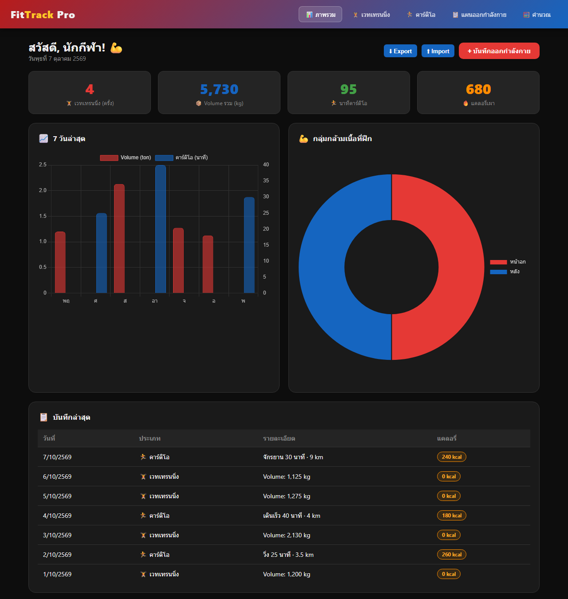
4.1.2 คลังท่าออกกำลังกาย
คลังท่าแสดงการ์ดของท่าออกกำลังกาย 30 ท่า กรองตามกลุ่มกล้ามเนื้อได้ แต่ละการ์ดบอกอุปกรณ์และกล้ามเนื้อที่ใช้ ดังภาพที่ 4.2 เมื่อกดการ์ด โปรแกรมเปิดหน้าต่างและเล่นวิดีโอสอนท่านั้นทันที พร้อมปุ่ม “+ บันทึกท่านี้” ที่พาไปยังฟอร์มบันทึกโดยเลือกท่าไว้ให้แล้ว
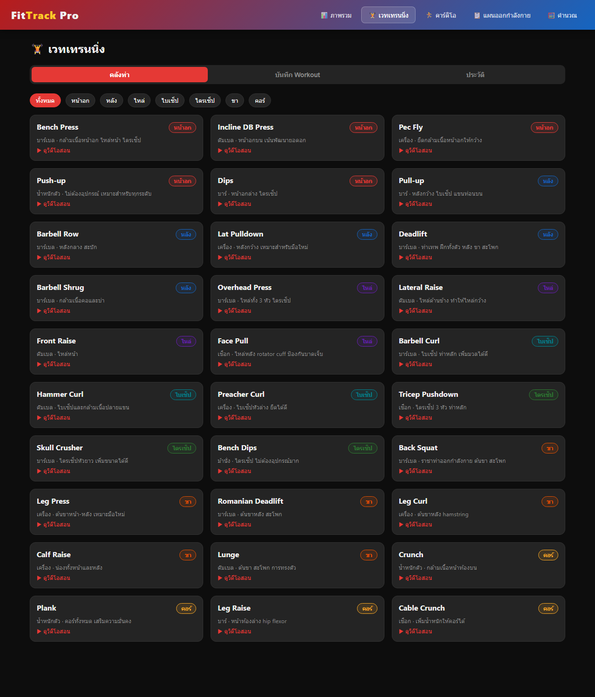
4.1.3 การบันทึกเวทเทรนนิ่งและนาฬิกาพัก
ผู้ใช้เลือกท่า กรอกน้ำหนัก จำนวนครั้ง จำนวน set และ RIR แล้วกด “บันทึก Set” รายการจะแสดงในส่วนบันทึกวันนี้พร้อม Volume รวม ด้านขวาเป็นนาฬิกาพักที่เลือกเวลาได้ 4 ระดับ เมื่อฝึกครบผู้ใช้กด “บันทึก Session” ดังภาพที่ 4.3
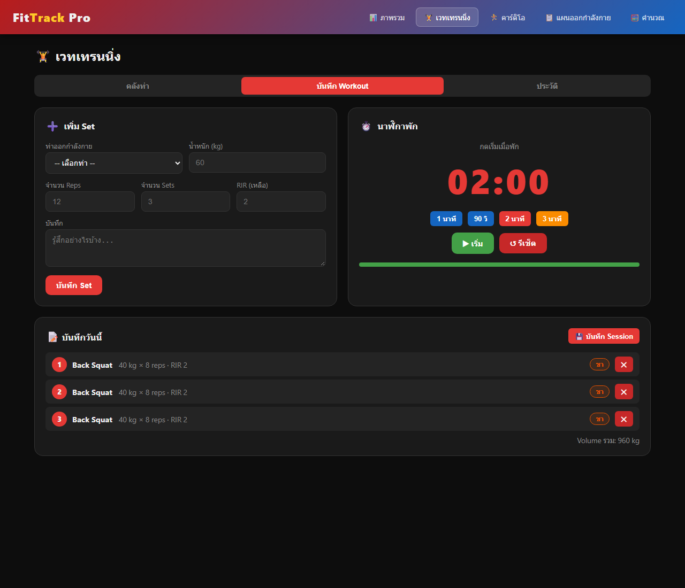
4.1.4 การบันทึกคาร์ดิโอ
ผู้ใช้เลือกประเภทคาร์ดิโอ กรอกระยะเวลา ระยะทาง HR เฉลี่ย แคลอรี่ ระดับความเข้มข้น และวันที่ ด้านล่างมีเครื่องคำนวณ pace จากระยะทางและเวลา ดังภาพที่ 4.4
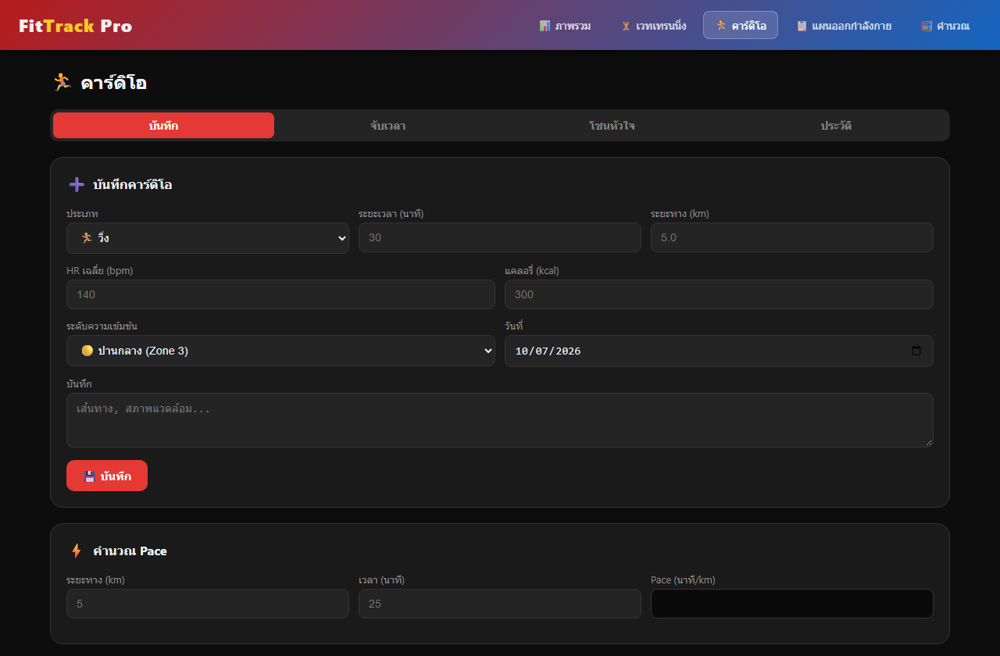
4.1.5 นาฬิกาจับเวลาและหัวใจสดจากนาฬิกา
แท็บจับเวลามี stopwatch พร้อมปุ่ม Lap และปุ่ม “บันทึกเป็นคาร์ดิโอ” ด้านล่างเป็นส่วนเชื่อมต่อนาฬิกาผ่าน Bluetooth เมื่อเชื่อมต่อแล้วจะแสดง HR ปัจจุบัน โซน ค่าเฉลี่ย และค่าสูงสุดระหว่างจับเวลา ดังภาพที่ 4.5 (ภาพแสดงสถานะก่อนเชื่อมต่อ)
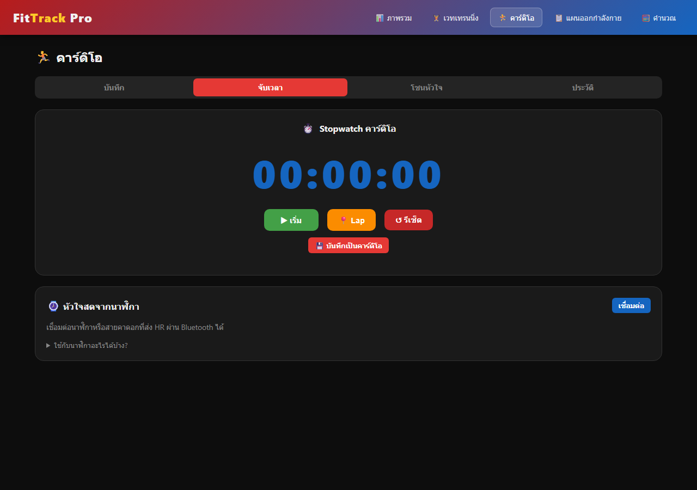
4.1.6 โซนอัตราการเต้นของหัวใจ
ผู้ใช้กรอกอายุและ HR ขณะพัก โปรแกรมคำนวณ HR สูงสุดและช่วง HR ของทั้ง 5 โซน ภาพที่ 4.6 เป็นตัวอย่างของผู้ใช้อายุ 21 ปี HR ขณะพัก 65 bpm ได้ HR สูงสุด 199 bpm และ Zone 2 อยู่ที่ 145–159 bpm ซึ่งตรงกับการคำนวณด้วยสมการที่ 2.1 และ 2.2
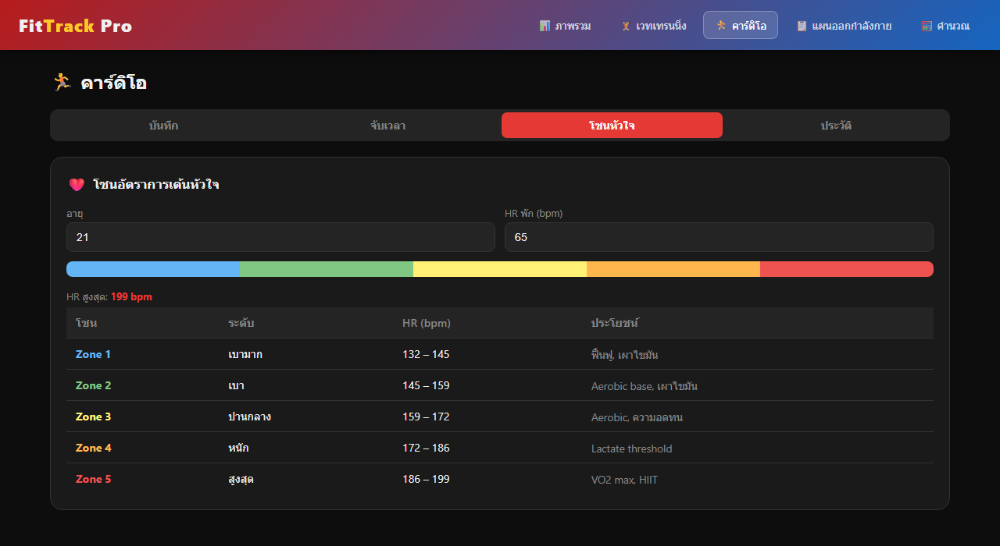
4.1.7 ประวัติคาร์ดิโอ
แท็บประวัติแสดงรายการคาร์ดิโอทั้งหมด ลบรายการได้ และมีกราฟระยะเวลาและแคลอรี่ ดังภาพที่ 4.7
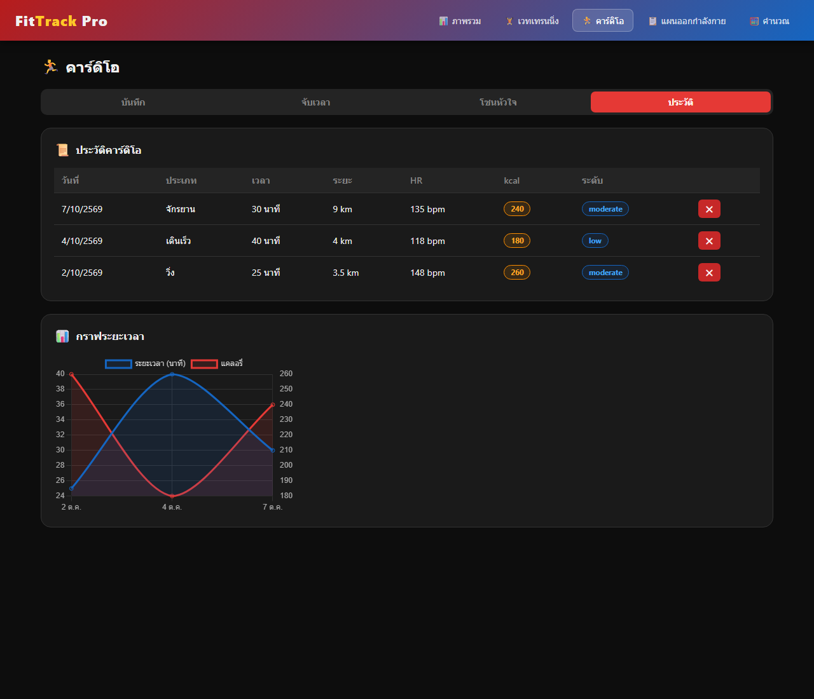
4.1.8 แผนออกกำลังกาย
หน้าแผนออกกำลังกายมีตารางรายสัปดาห์ที่ระบุท่า จำนวน set และจำนวนครั้งของแต่ละวัน และแผนโปรแกรมยอดนิยม 6 แบบพร้อมระดับความยากและจำนวนวันต่อสัปดาห์ แผนที่เหมาะกับผู้เริ่มต้นมีป้ายกำกับ “เริ่มต้น” ดังภาพที่ 4.8
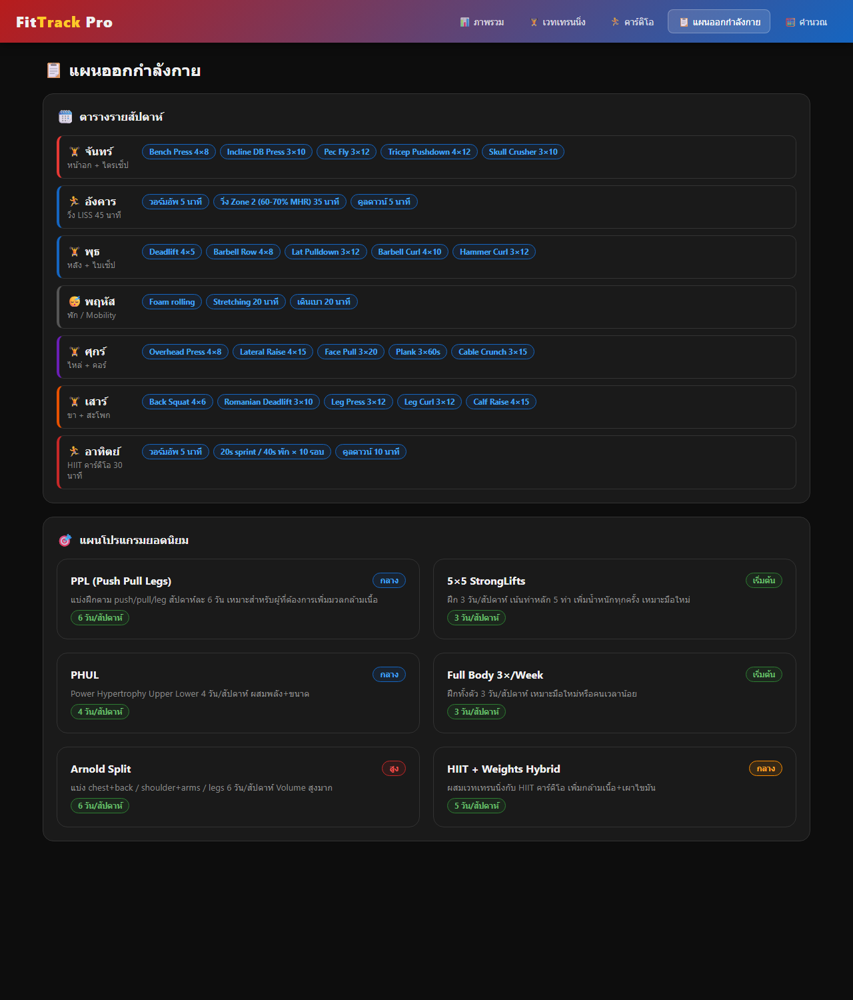
4.1.9 เครื่องคำนวณ
หน้าเครื่องคำนวณมี 4 แท็บ ภาพที่ 4.9 แสดงการคำนวณ BMR และ TDEE ของผู้ชายอายุ 21 ปี น้ำหนัก 65 กิโลกรัม ส่วนสูง 172 เซนติเมตร ระดับกิจกรรมปานกลาง ได้ BMR 1,665 kcal/วัน ซึ่งตรงกับสมการที่ 2.3 ภาพที่ 4.10 แสดงการแบ่งสารอาหารหลัก และภาพที่ 4.11 แสดงการประมาณ 1RM จากน้ำหนัก 40 กิโลกรัม 8 ครั้ง ได้ 50.7 กิโลกรัม (Epley) และ 49.7 กิโลกรัม (Brzycki)
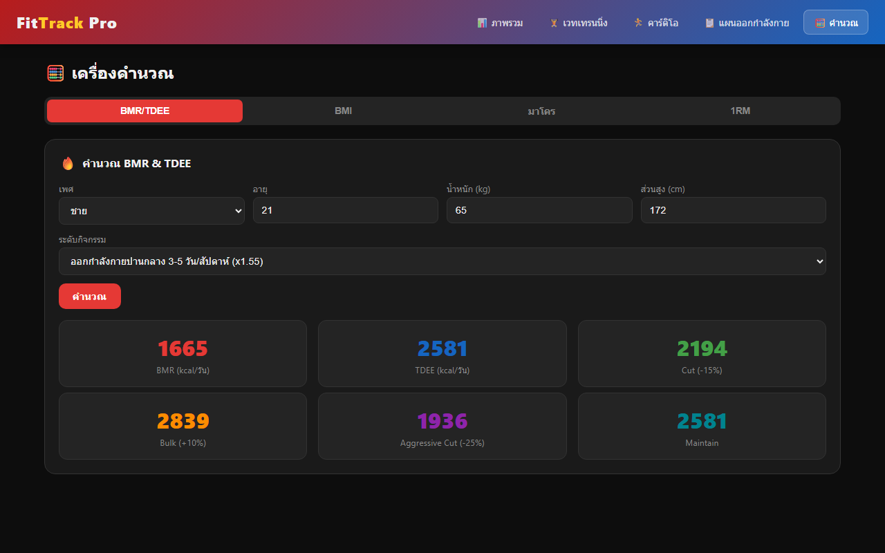
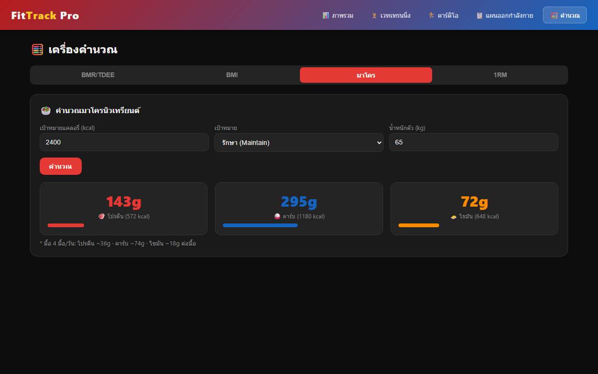
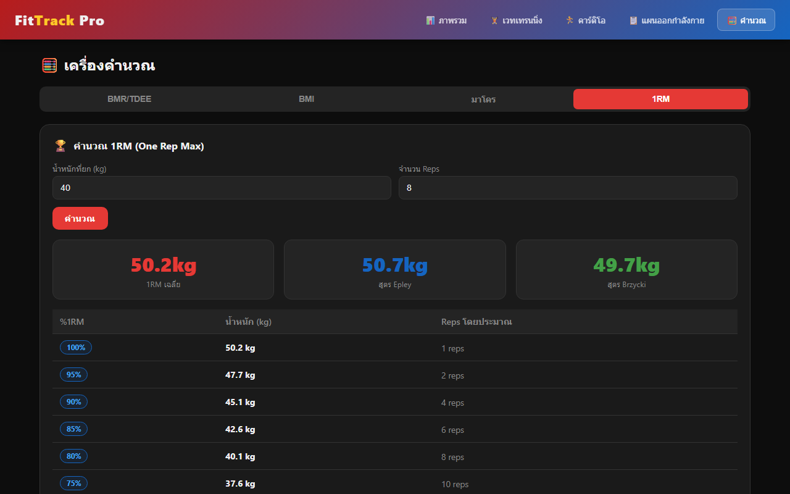
4.1.10 ปุ่มนาฬิกาบนแถบเมนู
ปุ่มนาฬิกาอยู่ด้านขวาของแถบเมนูทุกหน้า เมื่อเชื่อมต่อแล้วจะแสดงค่าหัวใจสด ดังภาพที่ 4.12 คณะผู้วิจัยทดสอบกับนาฬิกา Huawei Watch GT 6 จริงบน Microsoft Edge และพัฒนาเพิ่มจากปัญหาที่พบ 3 เรื่อง เรื่องแรก การเชื่อมต่อค้าง จึงกำหนดเวลาหมดอายุ 15 วินาทีพร้อมแจ้งสาเหตุ เรื่องที่สอง การเชื่อมต่อหลุดบ่อยและต้องเลือกนาฬิกาใหม่หลังรีเฟรชหน้า จึงเพิ่มการเชื่อมใหม่อัตโนมัติ การจำอุปกรณ์ และการป้องกันหน้าจอดับ เรื่องที่สาม เชื่อมต่อได้แต่ไม่มีค่าหัวใจ จึงเพิ่มบันทึกการเชื่อมต่อที่แสดงค่าดิบจากนาฬิกา การอ่านค่าสำรอง และข้อความแยกสาเหตุว่านาฬิกาไม่ส่งค่าเลยหรือส่งค่าเป็น 0
4.1.11 โปรไฟล์และการคำนวณอัตโนมัติ
ผู้ใช้กรอกโปรไฟล์ครั้งเดียวที่หน้าคำนวณ หรือกดปุ่มโปรไฟล์บนแถบเมนู ดังภาพที่ 4.13 จากนั้นโปรแกรมใช้ค่าเหล่านี้คำนวณให้อัตโนมัติ ภาพที่ 4.14 แสดงการบันทึกการวิ่ง 30 นาที ระยะทาง 5 กิโลเมตร HR เฉลี่ย 150 bpm ของผู้ชายอายุ 21 ปี น้ำหนัก 65 กิโลกรัม HR ขณะพัก 65 bpm โปรแกรมแสดง pace 6:00 นาทีต่อกิโลเมตร ระดับความหนัก “เบา” เพราะ 150 bpm อยู่ใน Zone 2 (145–159 bpm) และแคลอรี่ ≈ 407 kcal ซึ่งตรงกับสมการที่ 2.7 คือ (−55.0969 + 0.6309 × 150 + 0.1988 × 65 + 0.2017 × 21) ÷ 4.184 = 13.55 kcal ต่อนาที คูณ 30 นาที ได้ 406.5 kcal ด้านบนของภาพเป็นการ์ดเชื่อมต่อ Strava ที่ดึงกิจกรรมจาก Huawei Health เข้าประวัติคาร์ดิโอเอง
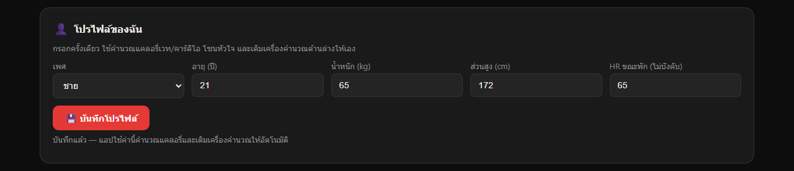
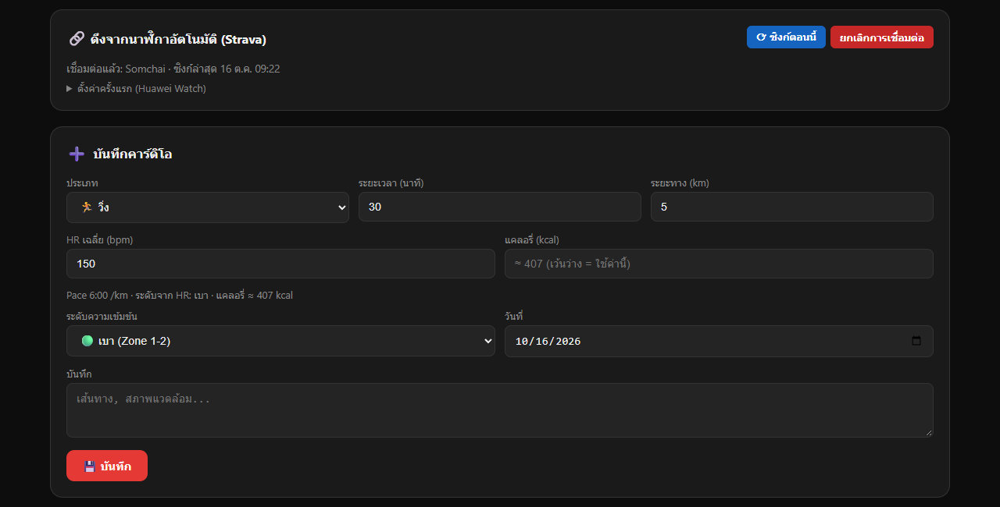
4.1.12 ชาเลนจ์นับท่าด้วยกล้อง
หน้าชาเลนจ์ให้ผู้ใช้เลือกท่าและโหมด แล้วกด “เริ่ม” โปรแกรมเปิดกล้อง วาดโครงร่างร่างกายทับวิดีโอ แสดงจำนวนครั้ง เวลาที่เหลือ และข้อความแนะนำท่าด้านล่าง ดังภาพที่ 4.15 ด้านล่างเป็นสถิติส่วนตัวสูงสุดของแต่ละท่าและโหมด และประวัติชาเลนจ์ที่มีคอลัมน์สถานะในตารางอันดับ ได้แก่ ✅ ขึ้นอันดับแล้ว ⏳ รอผู้ดูแลตรวจ และปุ่มส่งเข้าอันดับสำหรับผลที่ยังไม่ได้ส่ง (โครงร่างในภาพสร้างจากข้อมูลจุดร่างกายตัวอย่าง เพื่อแสดงการแสดงผล)
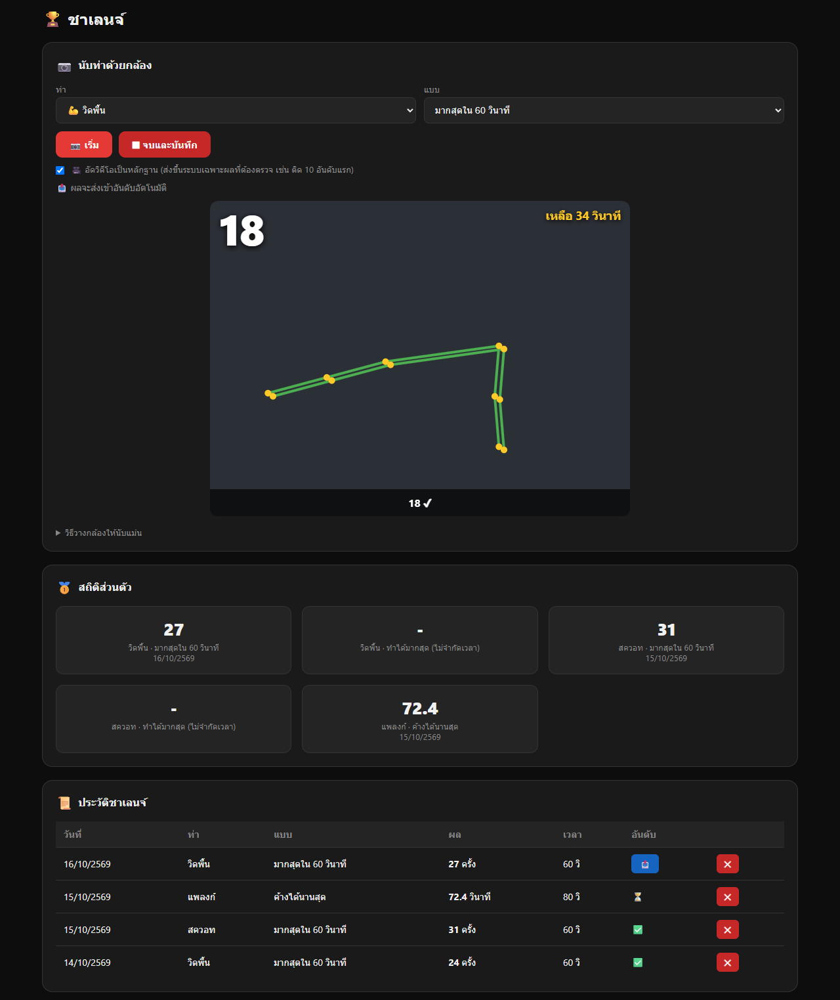
4.1.13 บัญชีผู้ใช้ เพื่อน และทีม
หน้าอันดับมีส่วนบัญชีผู้ใช้ ก่อนเข้าสู่ระบบจะแสดงฟอร์มเข้าสู่ระบบและสมัครสมาชิกพร้อมช่องยินยอม เมื่อเข้าสู่ระบบแล้วจะแสดงชื่อ เหรียญรางวัลที่ได้ รหัสเพื่อน รายชื่อเพื่อน ทีมและรหัสชวน และเมนูแก้ไขข้อมูลหรือลบบัญชี ดังภาพที่ 4.16
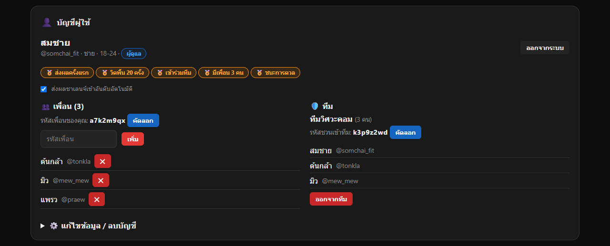
4.1.14 ตารางอันดับ
ตารางอันดับเลือกรายการ แบบ ช่วงเวลา กลุ่มผู้ใช้ เพศ และช่วงอายุได้ ผลของผู้ใช้เองมีพื้นสีต่างจากผู้อื่น ผลที่มีวิดีโอหลักฐานมีสัญลักษณ์กล้อง และมีปุ่มรายงานผลของผู้อื่น ดังภาพที่ 4.17
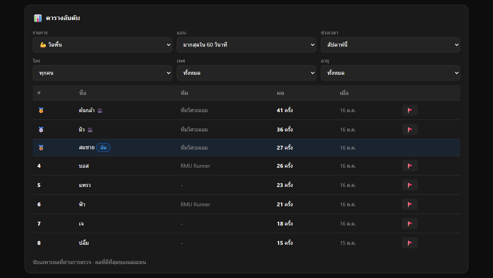
4.1.15 การแข่งขัน
ส่วนการแข่งขันมีฟอร์มสร้างรหัสท้าดวล รับคำท้า และเริ่มแข่งแบบทีม ด้านล่างแสดงการแข่งขันที่ผู้ใช้เกี่ยวข้อง ได้แก่ อีเวนต์พร้อม 10 อันดับแรก ดวลพร้อมผลของทั้งสองฝ่าย และการแข่งแบบทีมพร้อมคะแนนรวม พร้อมเวลาที่เหลือ และปุ่มไปทำชาเลนจ์ที่ตั้งท่าไว้ให้แล้ว เมื่อการแข่งจบ ระบบประกาศผู้ชนะ ดังภาพที่ 4.18
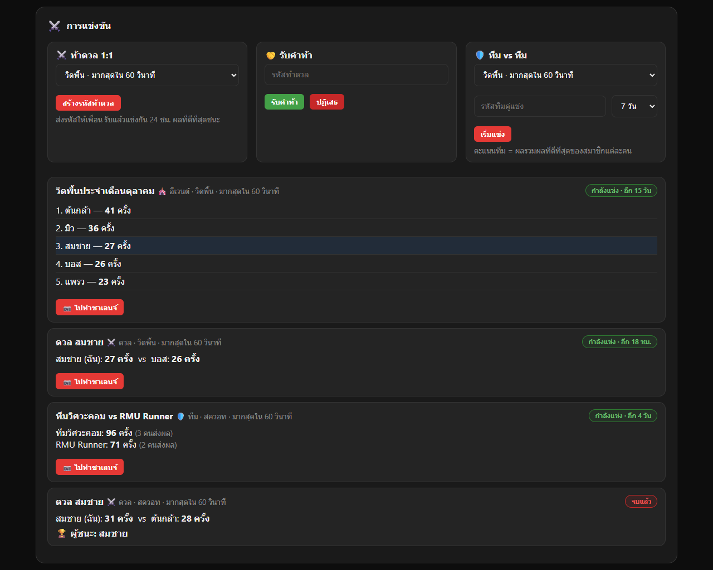
4.1.16 หน้าผู้ดูแลระบบ
ผู้ดูแลเห็นคิวผลที่รอตรวจพร้อมเหตุผล กราฟมุมข้อต่อตลอดชาเลนจ์ และวิดีโอหลักฐาน (ถ้ามี) และมีปุ่มอนุมัติ ไม่อนุมัติ และระงับบัญชี ภาพที่ 4.19 แสดงผลที่อ้างว่าวิดพื้นได้ 64 ครั้ง แต่กราฟมุมข้อต่อมีจังหวะขึ้น–ลงประมาณ 30 ครั้ง ระบบจึงตั้งข้อสงสัยว่า “จำนวนไม่ตรงกับท่าทางที่จับได้” และไม่นำขึ้นตารางอันดับ
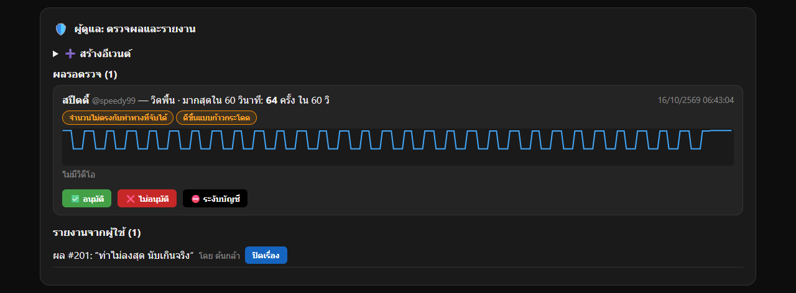
4.2 ผลการทดสอบการทำงานของระบบ
คณะผู้วิจัยทดสอบการทำงานด้วยการทดสอบอัตโนมัติบน Chrome แบบ headless ที่ควบคุมด้วย puppeteer-core ผ่านเว็บเซิร์ฟเวอร์ในเครื่อง โดยจำลองการกดและการกรอกข้อมูลเหมือนผู้ใช้จริง ผลการทดสอบชุดหลักผ่าน 31 จาก 31 กรณี ดังตารางที่ 4.1 ผลการทดสอบระบบวิดีโอสอนท่าดังตารางที่ 4.2 ผลการทดสอบการเชื่อมต่อนาฬิกาด้วยอุปกรณ์ Bluetooth จำลองดังตารางที่ 4.3 ผลการทดสอบระบบชาเลนจ์ดังตารางที่ 4.4 ผลการทดสอบระบบบัญชี อันดับ และการแข่งขันดังตารางที่ 4.5 และสรุปผลการทดสอบทั้งหมดดังตารางที่ 4.6 ชุดทดสอบทั้งหมดรันซ้ำทุกครั้งที่แก้ไขโปรแกรม เพื่อยืนยันว่าฟังก์ชันเดิมยังทำงานถูกต้อง
| ที่ | กรณีทดสอบ | ผล |
|---|---|---|
| 1 | ข้อมูลใน localStorage เสียหาย: โปรแกรมเปิดได้ สำรองข้อมูลเสียไว้ และแจ้งผู้ใช้ | ผ่าน |
| 2 | แปลงข้อมูลรุ่น 1 เป็นรุ่น 2: วันที่ถูกรูปแบบ ทุกรายการมีรหัส และมีสำเนาข้อมูลเดิม | ผ่าน |
| 3 | กราฟ 7 วัน: วันนี้อยู่ขวาสุด และไม่นับรายการวันที่ในอนาคต | ผ่าน |
| 4 | Chart.js โหลดจากไฟล์ในโปรเจกต์ (vendor) | ผ่าน |
| 5 | ลบ session และลบรายการคาร์ดิโอได้ตรงรายการที่กด | ผ่าน |
| 6 | ปฏิเสธค่าที่ไม่ถูกต้อง เช่น reps ติดลบ sets 9999 และเวลาคาร์ดิโอติดลบ ส่วนค่าปกติบันทึกได้ | ผ่าน |
| 7 | set ค้างจากเมื่อวาน: มีคำเตือน และ session ลงวันที่ของ set | ผ่าน |
| 8 | นำเข้าไฟล์ที่ฝังสคริปต์อันตราย 10 จุด: ไม่มีสคริปต์ใดทำงาน | ผ่าน |
| 9 | ส่งออกแล้วนำเข้ากลับได้ข้อมูลตรงกัน และไฟล์ผิดรูปแบบถูกปฏิเสธ | ผ่าน |
| 10 | หน้าจอกว้าง 360 พิกเซล: ไม่มีการเลื่อนแนวนอน | ผ่าน |
| 11 | กด Esc หรือคลิกพื้นหลังเพื่อปิดหน้าต่างได้ | ผ่าน |
| 12 | ไม่มีข้อมูลแล้วแสดงข้อความแทนรายการว่าง | ผ่าน |
| 13 | Service Worker ติดตั้งได้ และแคชไฟล์ของแอปครบ | ผ่าน |
| 14 | ป้ายกำกับทุกช่องผูกกับช่องกรอก และเมนูบอกหน้าปัจจุบัน | ผ่าน |
| 15 | ไม่มีข้อผิดพลาด JavaScript ตลอดการทดสอบ | ผ่าน |
| รวม (นับเป็นกรณีทดสอบย่อย) | 31/31 | |
| ที่ | กรณีทดสอบ | ผล |
|---|---|---|
| 1 | กดการ์ดท่าแล้วเปิดหน้าต่างของท่านั้น | ผ่าน |
| 2 | วิดีโอเล่นเองโดยไม่ต้องกดเล่น และมีเสียง | ผ่าน |
| 3 | ปิดหน้าต่างแล้ววิดีโอหยุดและถูกลบ ไม่มีเสียงค้าง | ผ่าน |
| 4 | เปิดท่าที่สองต่อ ได้วิดีโอของท่าใหม่ถูกต้อง | ผ่าน |
| 5 | ปุ่ม “+ บันทึกท่านี้” เลือกท่าในฟอร์มและไปยังแท็บบันทึก | ผ่าน |
| 6 | ออฟไลน์แล้วแสดงข้อความแทนวิดีโอ | ผ่าน |
| 7 | เบราว์เซอร์ที่บล็อกเสียง: เล่นแบบปิดเสียงและแสดงปุ่มเปิดเสียง | ผ่าน |
| 8 | หน้าจอกว้าง 360 พิกเซล: หน้าต่างวิดีโอไม่ล้นจอ | ผ่าน |
| รวมกับชุดหลัก | 42/42 | |
| ที่ | กรณีทดสอบ | ผล |
|---|---|---|
| 1 | เบราว์เซอร์ไม่มี Bluetooth: แสดงข้อความแนะนำ | ผ่าน |
| 2 | ขอเชื่อมต่อเฉพาะอุปกรณ์ที่มี Heart Rate Service | ผ่าน |
| 3 | อ่านค่า HR ได้ทั้งแบบ 8 บิตและ 16 บิต | ผ่าน |
| 4 | คำนวณโซนถูกต้อง (อายุ 30 ปี HR ขณะพัก 60: 130 = Zone 1, 160 = Zone 3, 185 = Zone 5) | ผ่าน |
| 5 | ค่าเฉลี่ยและค่าสูงสุดนับเฉพาะช่วงที่จับเวลา | ผ่าน |
| 6 | “บันทึกเป็นคาร์ดิโอ” เติมเวลาและ HR เฉลี่ยลงฟอร์ม | ผ่าน |
| 7 | สัญญาณหลุดแล้วเชื่อมใหม่เอง และกดตัดการเชื่อมต่อเองแล้วไม่เชื่อมใหม่ | ผ่าน |
| ที่ | กรณีทดสอบ | ผล |
|---|---|---|
| 1 | วิดพื้นถูกท่า 5 ครั้ง นับได้ 5 ครั้ง | ผ่าน |
| 2 | ลงไม่ลึก (ศอก 120°) ไม่นับ และแจ้ง “ลงให้ลึกกว่านี้” | ผ่าน |
| 3 | สะโพกตกตลอดทั้งครั้ง ไม่นับ และแจ้งว่าลำตัวไม่ตรง | ผ่าน |
| 4 | มองไม่เห็นตัว ไม่นับ และแจ้งให้ถอยห่างกล้อง | ผ่าน |
| 5 | ยืนงอแขน (ลำตัวตั้ง) ไม่นับเป็นวิดพื้น | ผ่าน |
| 6 | มุมสั่น ±5° ยังนับถูก | ผ่าน |
| 7 | จุดร่างกายหาย 1 เฟรม สะโพกเพี้ยน 1 เฟรม หรือความเอียงเพี้ยน 1 เฟรม ยังนับครบ | ผ่าน |
| 8 | สองข้างของร่างกายเห็นชัดพอกัน ระบบยึดข้างเดียว ไม่สลับไปมา | ผ่าน |
| 9 | ลงถึง 98° นับ (ทนความคลาดเคลื่อนของภาพ 2 มิติ) | ผ่าน |
| 10 | สควอทลึก 3 ครั้ง นับ 3 ย่อครึ่งเดียวไม่นับ และหลังก้มมากไม่นับ | ผ่าน |
| 11 | แพลงก์ตรง 10 วินาที ได้ 10.0 วินาที และสะโพกตกกลางทาง นาฬิกาหยุด (ได้ประมาณ 7 วินาที) | ผ่าน |
| 12 | หน้าจอ สถิติส่วนตัว ประวัติ การตรวจข้อมูลนำเข้า และปิดกล้องเมื่อออกจากหน้า | ผ่าน |
| 13 | กล้องจำลองในเว็บเบราว์เซอร์จริง: โหลดแบบจำลอง เปิดกล้อง ลูปตรวจจับทำงาน และผลเป็น 0 ไม่บันทึก | ผ่าน |
| 14 | อัดวิดีโอหลักฐาน: เริ่มอัดเมื่อเลือก หยุดอัดก่อนปิดกล้อง และได้ไฟล์วิดีโอ | ผ่าน |
| รวม (ตัวนับ 28 กรณีย่อย + กล้องจำลอง 8 กรณีย่อย) | 36/36 | |
| ที่ | กรณีทดสอบ | ผล |
|---|---|---|
| 1 | สมัคร เข้าสู่ระบบ และต่ออายุ token ได้ ชื่อซ้ำ ชื่อผิดรูปแบบ และรหัสผ่านผิดถูกปฏิเสธ | ผ่าน |
| 2 | ต้องยินยอมก่อนสมัคร และผู้ใช้อายุต่ำกว่า 18 ปีต้องมีความยินยอมของผู้ปกครอง | ผ่าน |
| 3 | เพื่อนบันทึกสองทิศทาง เพิ่มตัวเองไม่ได้ และหนึ่งคนอยู่ได้หนึ่งทีม | ผ่าน |
| 4 | ดวล: รับคำท้าของตัวเองไม่ได้ และกดรับซ้ำได้เพียงคนเดียว | ผ่าน |
| 5 | อีเวนต์: ผู้ใช้ทั่วไปสร้างไม่ได้ และนับผลเฉพาะผู้เข้าร่วม | ผ่าน |
| 6 | ผลปลอม (บอก 40 ครั้ง แต่ร่องรอยมี 5 ครั้ง) รอตรวจและไม่ขึ้นอันดับ ผลที่เป็นไปไม่ได้ (150 ครั้งใน 60 วินาที) และโหมด 60 วินาทีที่ใช้เวลา 10 วินาทีถูกปฏิเสธ | ผ่าน |
| 7 | ตารางอันดับกรองเพื่อน ทีม เพศ และอายุถูกต้อง และอันดับเพื่อน/ทีมต้องเข้าสู่ระบบ | ผ่าน |
| 8 | คะแนนทีม (20 + 15 = 35 ต่อ 30) ถูกต้อง | ผ่าน |
| 9 | รายงาน คิวผู้ดูแล ไม่อนุมัติ และระงับบัญชีแล้วหายจากอันดับและส่งผลไม่ได้ | ผ่าน |
| 10 | วิดีโอหลักฐานอัปโหลดผ่าน URL ที่ใช้ได้ครั้งเดียว และผู้อื่นที่ไม่ใช่ผู้ดูแลดูไม่ได้ | ผ่าน |
| 11 | ดวลหมดเวลาแล้วปิดเอง และผู้ชนะได้เหรียญรางวัล | ผ่าน |
| 12 | ลบบัญชีแล้วข้อมูลทุกตารางถูกลบ และเข้าสู่ระบบไม่ได้อีก | ผ่าน |
| 13 | หน้าจอจริงต่อกับระบบจริง: สมัครผ่านฟอร์ม ส่งผลอัตโนมัติ แจ้งผลดวลไม่ซ้ำ ป้องกันสคริปต์อันตรายในชื่อที่แสดง และต่ออายุ token เอง | ผ่าน |
| 14 | กฎตรวจผล 19 กรณี คำขอจากเว็บไซต์อื่นถูกปฏิเสธ ข้อผิดพลาดภายในไม่ถูกเปิดเผย และตัดรอบสัปดาห์/เดือนตามเวลาประเทศไทย | ผ่าน |
| รวม (API 63 + หน้าจอ 40 + unit 32 กรณีย่อย) | 135/135 | |
การทดสอบกับฐานข้อมูลจริงใช้บัญชีทดสอบที่ขึ้นต้นด้วย zz_test_ และลบทิ้งหลังทดสอบทุกครั้ง หลังทดสอบไม่มีข้อมูลทดสอบค้างในฐานข้อมูล
| ชุดทดสอบ | จำนวนกรณี | ผล |
|---|---|---|
| แอปหลัก (บันทึก วิดีโอ Bluetooth Strava คำนวณอัตโนมัติ และอื่น ๆ) | 108 | ผ่านทั้งหมด |
| ตัวนับท่าด้วยข้อมูลจุดร่างกายจำลอง | 28 | ผ่านทั้งหมด |
| กล้องจำลองในเว็บเบราว์เซอร์จริง | 8 | ผ่านทั้งหมด |
| ฟังก์ชันฝั่งเซิร์ฟเวอร์ของ Strava | 14 | ผ่านทั้งหมด |
| API บัญชี อันดับ และการแข่งขัน กับฐานข้อมูลจริง | 63 | ผ่านทั้งหมด |
| หน้าจอต่อกับระบบจริงตั้งแต่ต้นจนจบ | 40 | ผ่านทั้งหมด |
| กฎตรวจผลและการรับคำขอ (unit) | 32 | ผ่านทั้งหมด |
| รวม | 293 | 293/293 |
นอกจากนี้ คณะผู้วิจัยทดสอบสคริปต์ติดตั้ง run.ps1 บน Windows พบว่าดาวน์โหลดโปรแกรมจาก GitHub และเปิดเว็บเซิร์ฟเวอร์ที่ http://localhost:8080 ได้ ไฟล์ที่ไม่มีอยู่ได้รหัส 404 และการขอไฟล์นอกโฟลเดอร์โปรแกรม (path traversal) ถูกปฏิเสธ
4.3 ผลการประเมินความพึงพอใจ
ผลการประเมินความพึงพอใจของกลุ่มเป้าหมายจำนวน ....... คน ดังตารางที่ 4.7
| ที่ | รายการประเมิน | x̄ | S.D. | ระดับ |
|---|---|---|---|---|
| ด้านการออกแบบ | ||||
| 1 | ความสวยงามและความเหมาะสมของหน้าจอ | ....... | ....... | ....... |
| 2 | ความชัดเจนของตัวอักษรและสี | ....... | ....... | ....... |
| 3 | การจัดวางเมนูเข้าใจง่าย | ....... | ....... | ....... |
| ด้านการใช้งาน | ||||
| 4 | ความง่ายในการบันทึกเวทเทรนนิ่ง | ....... | ....... | ....... |
| 5 | ความง่ายในการบันทึกคาร์ดิโอ | ....... | ....... | ....... |
| 6 | ความเร็วในการตอบสนองของโปรแกรม | ....... | ....... | ....... |
| ด้านประโยชน์ต่อผู้เริ่มต้น | ||||
| 7 | วิดีโอสอนท่าช่วยให้เข้าใจท่าที่ถูกต้อง | ....... | ....... | ....... |
| 8 | แผนออกกำลังกายช่วยในการวางแผนการฝึก | ....... | ....... | ....... |
| 9 | สถิติและกราฟช่วยให้เห็นความก้าวหน้า | ....... | ....... | ....... |
| 10 | เครื่องคำนวณมีประโยชน์ต่อการดูแลโภชนาการ | ....... | ....... | ....... |
| 11 | การนับท่าด้วยกล้องช่วยให้ทำท่าได้ถูกต้อง | ....... | ....... | ....... |
| 12 | ตารางอันดับและการแข่งขันช่วยสร้างแรงจูงใจ | ....... | ....... | ....... |
| ค่าเฉลี่ยรวม | ....... | ....... | ....... | |
บทที่ 5สรุปผล อภิปรายผล และข้อเสนอแนะ
5.1 สรุปผล
คณะผู้วิจัยพัฒนาโปรแกรมออกกำลังกายสำหรับมือใหม่ FitTrack Pro ในรูปแบบ Progressive Web App ได้ครบตามวัตถุประสงค์ ดังนี้
- โปรแกรมใช้งานได้ทั้งบนคอมพิวเตอร์และโทรศัพท์มือถือ ติดตั้งลงหน้าจอโฮม และใช้งานออฟไลน์ได้ เผยแพร่ผ่าน Vercel และมีสคริปต์เปิดโปรแกรมด้วยคำสั่งเดียวบน Windows
- โปรแกรมมีระบบบันทึกเวทเทรนนิ่งและคาร์ดิโอ คลังท่า 30 ท่าพร้อมวิดีโอสอน นาฬิกาพัก stopwatch โซนหัวใจ แผนการฝึก เครื่องคำนวณ 4 ชนิด หน้าสรุปผลพร้อมกราฟ และการคำนวณแคลอรี่ pace และระดับความหนักอัตโนมัติจากสมการที่มีงานวิจัยรองรับ
- โปรแกรมเชื่อมต่อนาฬิกาผ่าน Web Bluetooth เพื่อแสดงค่าหัวใจแบบสด ซึ่งพัฒนาความเสถียรจากการทดสอบกับ Huawei Watch GT 6 จริง และดึงกิจกรรมจาก Huawei Health ผ่าน Strava
- โปรแกรมนับจำนวนครั้งของวิดพื้นและสควอท และจับเวลาแพลงก์ด้วยกล้อง โดยนับเฉพาะท่าที่ถูกต้องและประมวลผลภาพภายในเครื่อง
- โปรแกรมมีระบบบัญชี เพื่อน ทีม ตารางอันดับ และการแข่งขัน 3 รูปแบบ พร้อมการตรวจผลฝั่งเซิร์ฟเวอร์ วิดีโอหลักฐาน การรายงาน หน้าผู้ดูแล และเหรียญรางวัล
- ผลการทดสอบการทำงานผ่านครบ 293 จาก 293 กรณี ผลการประเมินความพึงพอใจอยู่ในระดับ ....... (x̄ = ......., S.D. = .......)
5.2 อภิปรายผล
การพัฒนาเป็น Progressive Web App ทำให้ผู้ใช้เริ่มใช้งานได้ทันทีจากลิงก์โดยไม่ต้องสมัครสมาชิกหรือติดตั้งจากร้านค้าแอปพลิเคชัน ซึ่งช่วยลดอุปสรรคของผู้เริ่มต้น การแยกข้อมูลการฝึกส่วนตัวไว้ในเครื่อง และเก็บบนเซิร์ฟเวอร์เฉพาะข้อมูลที่จำเป็นต่อการแข่งขัน ทำให้ผู้ใช้ที่ไม่ต้องการแข่งขันไม่ต้องส่งข้อมูลใดออกไปภายนอก ซึ่งสอดคล้องกับหลักการเก็บข้อมูลเท่าที่จำเป็นของพระราชบัญญัติคุ้มครองข้อมูลส่วนบุคคล
การใช้วิธีของ Karvonen ร่วมกับค่าหัวใจสดทำให้ผู้เริ่มต้นควบคุมความหนักของการฝึกคาร์ดิโอได้ และการคำนวณแคลอรี่ด้วยสมการของ Keytel เมื่อมีค่าหัวใจ หรือค่า MET เมื่อไม่มี ให้ค่าที่มีที่มา ผลการคำนวณในโปรแกรมตรงกับการคำนวณด้วยสมการในบทที่ 2 ดังตัวอย่างในหัวข้อ 4.1.6, 4.1.9 และ 4.1.11
การนับท่าด้วยกล้องในภาพ 2 มิติได้รับผลจากมุมกล้องและสัญญาณรบกวนของแบบจำลอง รุ่นแรกของตัวนับเปลี่ยนสถานะทันทีเมื่อพบเฟรมที่ผิดพลาดเพียงเฟรมเดียว ทำให้นับขาดเมื่อใช้งานจริง คณะผู้วิจัยจึงปรับให้ระบบยึดข้างของร่างกายที่เห็นชัด ทนต่อเฟรมที่ผิดพลาดเป็นช่วงเวลาสั้น ๆ และใช้แบบจำลองรุ่นที่แม่นยำกว่าเมื่อเครื่องรองรับ GPU ซึ่งยืนยันด้วยกรณีทดสอบในตารางที่ 4.4
ตารางอันดับจะสร้างแรงจูงใจได้ก็ต่อเมื่อผู้ใช้เชื่อถือผลในตาราง เนื่องจากค่าที่ส่งจากเว็บเบราว์เซอร์แก้ไขได้เสมอ โปรแกรมจึงตรวจผลซ้ำที่เซิร์ฟเวอร์ โดยเฉพาะการนับจำนวนครั้งซ้ำจากร่องรอยมุมข้อต่อ ซึ่งตรวจพบผลปลอมในการทดสอบได้ อย่างไรก็ตาม ผู้ที่สร้างร่องรอยปลอมให้สมจริงยังผ่านการตรวจอัตโนมัติได้ จึงต้องมีวิดีโอหลักฐาน การรายงาน และผู้ดูแลเป็นด่านสุดท้าย
5.3 ข้อจำกัดของระบบ
- ข้อมูลการฝึกส่วนตัวเก็บในเบราว์เซอร์ของแต่ละเครื่อง ไม่ซิงก์ข้ามอุปกรณ์อัตโนมัติ และหากผู้ใช้ล้างข้อมูลเบราว์เซอร์โดยไม่ได้สำรองไว้ ข้อมูลจะหาย
- iPhone และ iPad ยังไม่รองรับ Web Bluetooth และนาฬิกาต้องเปิดโหมดส่งค่าหัวใจก่อน การทดสอบกับ Huawei Watch GT 6 จริงเชื่อมต่อได้ แต่การส่งค่าหัวใจยังต้องตรวจสอบตามโหมดของนาฬิกาเพิ่มเติม
- การนับท่าด้วยกล้องใช้ภาพ 2 มิติ ผู้ใช้ต้องวางกล้องด้านข้างลำตัว และต้องต่ออินเทอร์เน็ตครั้งแรกเพื่อโหลดแบบจำลอง
- การดึงกิจกรรมจาก Strava ต้องตั้งค่าแอปพลิเคชัน Strava และกุญแจบนเซิร์ฟเวอร์ก่อน และนาฬิกาต้องส่งข้อมูลจาก Huawei Health ไป Strava ได้
- Supabase จำกัดจำนวนครั้งการเข้าสู่ระบบตาม IP ของผู้เรียก ซึ่งในระบบนี้คือ IP ของ Vercel ที่ผู้ใช้ทุกคนใช้ร่วมกัน หากมีผู้ใช้พร้อมกันจำนวนมากอาจถูกจำกัดชั่วคราว
- การแจ้งผลการแข่งขันเป็นการแจ้งภายในแอปเมื่อเปิดโปรแกรม ยังไม่มีการแจ้งเตือนขณะปิดโปรแกรม (Push Notification)
- วิดีโอสอนท่าต้องใช้อินเทอร์เน็ต และขึ้นอยู่กับเจ้าของวิดีโอบน YouTube
- ยังแก้ไขรายการในประวัติไม่ได้ ทำได้เฉพาะลบแล้วบันทึกใหม่
5.4 ข้อเสนอแนะ
- เพิ่มการสำรองข้อมูลการฝึกบนคลาวด์ที่ผู้ใช้เลือกเปิดเอง โดยใช้บัญชีผู้ใช้ที่มีอยู่แล้ว เพื่อใช้ข้อมูลเดียวกันได้หลายอุปกรณ์
- ใช้พิกัด 3 มิติจากแบบจำลอง (World Landmarks) คำนวณมุมข้อต่อ เพื่อลดผลของมุมกล้อง และเพิ่มท่าอื่น เช่น ซิทอัพ และกระโดดตบ
- เพิ่มการเข้าสู่ระบบด้วย Google และการแจ้งเตือนแบบ Push Notification เมื่อมีคำท้าหรือผลการแข่งขัน
- เพิ่มการบันทึกสถิติส่วนตัวสูงสุดของเวทเทรนนิ่ง กราฟความก้าวหน้ารายท่า และการแนะนำน้ำหนักครั้งถัดไป
- ทดสอบกับผู้ใช้กลุ่มใหญ่ขึ้นและนาฬิกาหลายยี่ห้อ และเปรียบเทียบจำนวนครั้งที่ระบบนับกับการนับของผู้สังเกต เพื่อวัดความแม่นยำของตัวนับ
บรรณานุกรม
[1] American College of Sports Medicine. (2021). ACSM's Guidelines for Exercise Testing and Prescription (11th ed.). Philadelphia: Wolters Kluwer.
[2] Karvonen, M. J., Kentala, E., & Mustala, O. (1957). The effects of training on heart rate; a longitudinal study. Annales Medicinae Experimentalis et Biologiae Fenniae, 35(3), 307–315.
[3] Harris, J. A., & Benedict, F. G. (1918). A biometric study of human basal metabolism. Proceedings of the National Academy of Sciences, 4(12), 370–373.
[4] Roza, A. M., & Shizgal, H. M. (1984). The Harris Benedict equation reevaluated: resting energy requirements and the body cell mass. The American Journal of Clinical Nutrition, 40(1), 168–182.
[5] Epley, B. (1985). Poundage Chart. Boyd Epley Workout. Lincoln, NE: Body Enterprises.
[6] Brzycki, M. (1993). Strength testing—predicting a one-rep max from reps-to-fatigue. Journal of Physical Education, Recreation & Dance, 64(1), 88–90.
[7] WHO Expert Consultation. (2004). Appropriate body-mass index for Asian populations and its implications for policy and intervention strategies. The Lancet, 363(9403), 157–163.
[8] World Health Organization. (2020). WHO guidelines on physical activity and sedentary behaviour. Geneva: World Health Organization.
[9] Fox, S. M., Naughton, J. P., & Haskell, W. L. (1971). Physical activity and the prevention of coronary heart disease. Annals of Clinical Research, 3(6), 404–432.
[10] Mozilla. (n.d.). Progressive web apps และ Web Storage API. MDN Web Docs. สืบค้นจาก https://developer.mozilla.org/
[11] W3C Web Bluetooth Community Group. (n.d.). Web Bluetooth. สืบค้นจาก https://webbluetoothcg.github.io/web-bluetooth/
[12] Zourdos, M. C., Klemp, A., Dolan, C., Quiles, J. M., Schau, K. A., Jo, E., Helms, E., Esgro, B., Duncan, S., Garcia Merino, S., & Blanco, R. (2016). Novel resistance training–specific rating of perceived exertion scale measuring repetitions in reserve. Journal of Strength and Conditioning Research, 30(1), 267–275.
[13] Schoenfeld, B. J., Pope, Z. K., Benik, F. M., Hester, G. M., Sellers, J., Nooner, J. L., Schnaiter, J. A., Bond-Williams, K. E., Carter, A. S., Ross, C. L., Just, B. L., Henselmans, M., & Krieger, J. W. (2016). Longer interset rest periods enhance muscle strength and hypertrophy in resistance-trained men. Journal of Strength and Conditioning Research, 30(7), 1805–1812.
[14] Chart.js. (n.d.). Chart.js documentation. สืบค้นจาก https://www.chartjs.org/docs/
[15] Google. (n.d.). YouTube IFrame Player API reference. สืบค้นจาก https://developers.google.com/youtube/iframe_api_reference
[16] Bluetooth SIG. (2011). Heart Rate Service Specification (v1.0). สืบค้นจาก https://www.bluetooth.com/specifications/specs/
[17] Keytel, L. R., Goedecke, J. H., Noakes, T. D., Hiiloskorpi, H., Laukkanen, R., van der Merwe, L., & Lambert, E. V. (2005). Prediction of energy expenditure from heart rate monitoring during submaximal exercise. Journal of Sports Sciences, 23(3), 289–297.
[18] Ainsworth, B. E., Haskell, W. L., Herrmann, S. D., Meckes, N., Bassett, D. R., Jr., Tudor-Locke, C., Greer, J. L., Vezina, J., Whitt-Glover, M. C., & Leon, A. S. (2011). 2011 Compendium of Physical Activities: A second update of codes and MET values. Medicine & Science in Sports & Exercise, 43(8), 1575–1581.
[19] Bazarevsky, V., Grishchenko, I., Raveendran, K., Zhu, T., Zhang, F., & Grundmann, M. (2020). BlazePose: On-device real-time body pose tracking. arXiv preprint arXiv:2006.10204.
[20] Google. (n.d.). Pose landmark detection guide for Web. MediaPipe Solutions. สืบค้นจาก https://ai.google.dev/edge/mediapipe/solutions/vision/pose_landmarker/web_js
[21] Strava. (n.d.). Strava API v3 documentation. สืบค้นจาก https://developers.strava.com/docs/
[22] Supabase. (n.d.). Supabase documentation. สืบค้นจาก https://supabase.com/docs
[23] พระราชบัญญัติคุ้มครองข้อมูลส่วนบุคคล พ.ศ. 2562. (2562, 27 พฤษภาคม). ราชกิจจานุเบกษา. เล่ม 136 ตอนที่ 69 ก. หน้า 52–95.
[24] Deterding, S., Dixon, D., Khaled, R., & Nacke, L. (2011). From game design elements to gamefulness: Defining “gamification”. In Proceedings of the 15th International Academic MindTrek Conference (pp. 9–15). ACM.
[25] Hardt, D. (Ed.). (2012). The OAuth 2.0 Authorization Framework (RFC 6749). Internet Engineering Task Force.
[26] Vercel. (n.d.). Vercel Functions documentation. สืบค้นจาก https://vercel.com/docs/functions
ภาคผนวก กคู่มือการติดตั้งและการใช้งาน
ก.1 การเปิดใช้งานผ่านเว็บ (ทุกอุปกรณ์)
- เปิดลิงก์ของโปรแกรมด้วย Google Chrome หรือ Microsoft Edge (บน iPhone ใช้ Safari)
- เลือกเมนู “ติดตั้งแอป” หรือ “เพิ่มไปยังหน้าจอหลัก” เพื่อติดตั้งลงหน้าจอโฮม
- หลังจากเปิดครั้งแรก โปรแกรมใช้งานแบบออฟไลน์ได้ ยกเว้นวิดีโอสอนท่า
ก.2 การติดตั้งและเปิดใช้งานบน Windows ด้วยคำสั่งเดียว
- กดปุ่ม Win + R พิมพ์
powershellแล้วกด Enter - คัดลอกคำสั่งต่อไปนี้ไปวาง แล้วกด Enter
irm https://raw.githubusercontent.com/karshi02/finnest/main/run.ps1 | iex
- สคริปต์จะดาวน์โหลดโปรแกรมรุ่นล่าสุด เปิดเว็บเซิร์ฟเวอร์ที่ http://localhost:8080 และเปิดเว็บเบราว์เซอร์ให้อัตโนมัติ
- เปิดหน้าต่าง PowerShell ทิ้งไว้ระหว่างใช้งาน และปิดหน้าต่างหรือกด Ctrl + C เมื่อเลิกใช้
- ข้อมูลการออกกำลังกายผูกกับที่อยู่ http://localhost:8080 จึงต้องเปิดที่อยู่นี้ทุกครั้ง
ผู้พัฒนาที่ดาวน์โหลดซอร์สโค้ดแล้ว ดับเบิลคลิกไฟล์ start.bat ได้ ไม่ควรเปิดไฟล์ index.html โดยตรง (file://) เพราะวิดีโอ Bluetooth และ Service Worker จะใช้งานไม่ได้
ก.3 การเชื่อมต่อนาฬิกาเพื่อดูค่าหัวใจ
- ใช้ Chrome บน Android หรือคอมพิวเตอร์ และเปิดโปรแกรมผ่าน https หรือ localhost
- เปิดโหมดส่งค่าหัวใจบนนาฬิกา (เช่น Broadcast Heart Rate) หรือสวมสายคาดอก
- กดปุ่ม ⌚ บนแถบเมนู (หรือหน้าคาร์ดิโอ แท็บจับเวลา) แล้วเลือกอุปกรณ์จากรายการ เช่น HUAWEI WATCH GT 6 โปรแกรมจะจำนาฬิกาไว้และเชื่อมใหม่เองเมื่อสัญญาณหลุด
- กดเริ่มจับเวลา เมื่อจบให้กด “บันทึกเป็นคาร์ดิโอ” เพื่อเติมเวลาและ HR เฉลี่ยลงฟอร์ม
ก.4 การสำรองและย้ายข้อมูล
- ที่หน้าภาพรวม กด “Export” เพื่อดาวน์โหลดไฟล์ JSON ของข้อมูลทั้งหมด
- ที่เครื่องใหม่ กด “Import” แล้วเลือกไฟล์ที่ส่งออกไว้
ก.5 การดึงกิจกรรมจากนาฬิกา Huawei ผ่าน Strava
- เปิดแอป Huawei Health บนมือถือ ไปที่ ฉัน (Me) > การจัดการความเป็นส่วนตัว > การแชร์ข้อมูลและการอนุญาต > Strava แล้วเข้าสู่ระบบ Strava
- ในโปรแกรม ไปที่หน้าคาร์ดิโอ กด “เชื่อมต่อ Strava” แล้วกดอนุญาต (ทำครั้งเดียว)
- หลังจากนี้ทุกครั้งที่เปิดโปรแกรม กิจกรรมใหม่จะเข้าประวัติคาร์ดิโอเอง พร้อมเวลา ระยะทาง HR เฉลี่ย และแคลอรี่
สำหรับผู้ดูแลระบบ: สร้างแอปพลิเคชันที่ https://www.strava.com/settings/api แล้วตั้งค่า STRAVA_CLIENT_ID และ STRAVA_CLIENT_SECRET ใน Environment Variables ของ Vercel
ก.6 การทำชาเลนจ์ด้วยกล้อง
- วางกล้องด้านข้างลำตัว ห่างประมาณ 2 เมตร สูงประมาณระดับเอว ให้เห็นตั้งแต่ศีรษะถึงเท้า มีแสงเพียงพอ
- ไปที่หน้าชาเลนจ์ เลือกท่าและโหมด แล้วกด “เริ่ม” และอนุญาตให้ใช้กล้อง
- เมื่อนับถอยหลังครบ 3 วินาที เริ่มออกกำลังกาย ทำตามข้อความแนะนำบนจอ
- โหมด 60 วินาทีจบเอง โหมดอื่นกด “จบและบันทึก” หากต้องการวิดีโอหลักฐาน ให้ติ๊ก “อัดวิดีโอเป็นหลักฐาน” ก่อนเริ่ม
ก.7 การสมัครสมาชิก ตารางอันดับ และการแข่งขัน
- ไปที่หน้าอันดับ เลือก “สมัครใหม่” กรอกชื่อผู้ใช้ รหัสผ่าน ชื่อที่แสดง เพศ และช่วงอายุ (ไม่บังคับ) ติ๊กยินยอม แล้วกดสมัคร
- แลกรหัสเพื่อนกับเพื่อน หรือสร้างทีมแล้วส่งรหัสชวนให้สมาชิก
- ผลชาเลนจ์จะส่งเข้าตารางอันดับเองเมื่อจบชาเลนจ์ ปิดได้ที่ช่อง “ส่งผลชาเลนจ์เข้าอันดับอัตโนมัติ”
- ท้าดวล: เลือกท่า กด “สร้างรหัสท้าดวล” แล้วส่งรหัสให้เพื่อน เพื่อนกด “รับคำท้า” แล้วแข่งกัน 24 ชั่วโมง
- ทีมต่อทีม: ใส่รหัสทีมคู่แข่ง เลือกจำนวนวัน แล้วกด “เริ่มแข่ง”
- อีเวนต์: กด “เข้าร่วม” ที่อีเวนต์ที่ต้องการ ผลชาเลนจ์หลังจากนั้นจะนับเข้าอีเวนต์
- ลบบัญชี: เปิด “แก้ไขข้อมูล / ลบบัญชี” แล้วพิมพ์ชื่อผู้ใช้เพื่อยืนยัน
ก.8 การตั้งผู้ดูแลระบบ
- สมัครบัญชีในโปรแกรมก่อน
- ตั้งค่า Environment Variable
ADMIN_USERNAMESใน Vercel เป็นชื่อผู้ใช้ของผู้ดูแล (หลายคนคั่นด้วยเครื่องหมายจุลภาค) แล้ว deploy ใหม่ - ผู้ดูแลจะเห็นส่วน “ผู้ดูแล: ตรวจผลและรายงาน” ในหน้าอันดับ และสร้างอีเวนต์ได้
ภาคผนวก ขแบบประเมินความพึงพอใจ
แบบประเมินความพึงพอใจต่อโปรแกรมออกกำลังกายสำหรับมือใหม่
ตอนที่ 1 ข้อมูลทั่วไปของผู้ตอบแบบประเมิน
1. เพศ ☐ ชาย ☐ หญิง ☐ ไม่ระบุ
2. อายุ ☐ ต่ำกว่า 20 ปี ☐ 20–30 ปี ☐ 31–40 ปี ☐ มากกว่า 40 ปี
3. ประสบการณ์ออกกำลังกาย ☐ ยังไม่เคย ☐ น้อยกว่า 6 เดือน ☐ 6 เดือนขึ้นไป
4. อุปกรณ์ที่ใช้ทดลอง ☐ คอมพิวเตอร์ ☐ Android ☐ iPhone/iPad
ตอนที่ 2 ความพึงพอใจต่อโปรแกรม (5 = มากที่สุด, 4 = มาก, 3 = ปานกลาง, 2 = น้อย, 1 = น้อยที่สุด)
| ที่ | รายการประเมิน | 5 | 4 | 3 | 2 | 1 |
|---|---|---|---|---|---|---|
| ด้านการออกแบบ | ||||||
| 1 | ความสวยงามและความเหมาะสมของหน้าจอ | |||||
| 2 | ความชัดเจนของตัวอักษรและสี | |||||
| 3 | การจัดวางเมนูเข้าใจง่าย | |||||
| ด้านการใช้งาน | ||||||
| 4 | ความง่ายในการบันทึกเวทเทรนนิ่ง | |||||
| 5 | ความง่ายในการบันทึกคาร์ดิโอ | |||||
| 6 | ความเร็วในการตอบสนองของโปรแกรม | |||||
| ด้านประโยชน์ต่อผู้เริ่มต้น | ||||||
| 7 | วิดีโอสอนท่าช่วยให้เข้าใจท่าที่ถูกต้อง | |||||
| 8 | แผนออกกำลังกายช่วยในการวางแผนการฝึก | |||||
| 9 | สถิติและกราฟช่วยให้เห็นความก้าวหน้า | |||||
| 10 | เครื่องคำนวณมีประโยชน์ต่อการดูแลโภชนาการ | |||||
| 11 | การนับท่าด้วยกล้องช่วยให้ทำท่าได้ถูกต้อง | |||||
| 12 | ตารางอันดับและการแข่งขันช่วยสร้างแรงจูงใจ | |||||
ตอนที่ 3 ข้อเสนอแนะเพิ่มเติม
.....................................................................................................................................................................
.....................................................................................................................................................................
ภาคผนวก คตัวอย่างโค้ดที่สำคัญ
ค.1 การคำนวณโซนหัวใจด้วยวิธีของ Karvonen
function buildZones(age, rhr) {
if (!age || !rhr) return null;
const mhr = 220 - age; // HR สูงสุด
if (rhr >= mhr) return null;
const hrr = mhr - rhr; // Heart Rate Reserve
const at = pct => Math.round(hrr * pct + rhr);
return [
{ name: 'Zone 1', label: 'เบามาก', min: at(0.50), max: at(0.60) },
{ name: 'Zone 2', label: 'เบา', min: at(0.60), max: at(0.70) },
{ name: 'Zone 3', label: 'ปานกลาง', min: at(0.70), max: at(0.80) },
{ name: 'Zone 4', label: 'หนัก', min: at(0.80), max: at(0.90) },
{ name: 'Zone 5', label: 'สูงสุด', min: at(0.90), max: mhr },
];
}
หมายเหตุ: ย่อรูปแบบการเขียนจากโค้ดจริงใน index.html เพื่อให้อ่านง่าย ผลการคำนวณเหมือนกัน
ค.2 การอ่านค่า Heart Rate Measurement จาก Bluetooth
// บิตที่ 0 ของ flags = 1 แปลว่าค่าหัวใจเป็นเลข 16 บิต, = 0 แปลว่า 8 บิต
function parseHeartRate(view) {
const flags = view.getUint8(0);
return (flags & 0x01) ? view.getUint16(1, true) : view.getUint8(1);
}
const device = await navigator.bluetooth.requestDevice({
filters: [{ services: ['heart_rate'] }]
});
ค.3 การประมาณ 1RM
const epley = r === 1 ? w : w * (1 + r / 30); const brzycki = w * 36 / (37 - r); const avg = r <= 10 ? (epley + brzycki) / 2 : epley; // Brzycki คลาดเคลื่อนเมื่อ reps สูง
ค.4 เว็บเซิร์ฟเวอร์ในเครื่องของ run.ps1 (ส่วนป้องกัน path traversal)
$rel = [Uri]::UnescapeDataString($ctx.Request.Url.AbsolutePath).TrimStart('/')
if (-not $rel) { $rel = 'index.html' }
$file = [IO.Path]::GetFullPath((Join-Path $root $rel))
# Block path traversal outside the app folder
if ($file.StartsWith($root, [StringComparison]::OrdinalIgnoreCase) -and
(Test-Path -LiteralPath $file -PathType Leaf)) {
$bytes = [IO.File]::ReadAllBytes($file)
$res.Headers['Cache-Control'] = 'no-cache'
$res.OutputStream.Write($bytes, 0, $bytes.Length)
} else {
$res.StatusCode = 404
}
ค.5 ตัวนับจำนวนครั้ง (ส่วนลำดับขึ้น–ลง)
// angle = มุมศอกที่ทำให้นิ่งแล้ว, ok = ลำตัวตรง, offPose = ลำตัวไม่ขนานพื้น, dt = เวลาจากเฟรมก่อน (ms)
function reps(angle, rule, ok, offPose, dt) {
st.offMs = offPose ? st.offMs + dt : 0;
if (st.phase === 'wait') {
if (!offPose && angle > rule.start) st.phase = 'up';
return false;
}
if (st.offMs > 600) { st.phase = 'wait'; return false; } // ไม่ขนานพื้นนานเกิน 0.6 วินาที
st.badMs = ok ? 0 : st.badMs + dt;
if (st.phase === 'up' && angle < rule.going) { st.phase = 'going'; st.badForm = false; }
if (st.phase === 'going' || st.phase === 'down') {
if (st.badMs > 300) st.badForm = true; // ลำตัวไม่ตรงต่อเนื่อง 0.3 วินาที
if (angle <= rule.down) st.phase = 'down';
if (angle > rule.up) {
const counted = st.phase === 'down' && !st.badForm;
if (counted) st.reps++;
st.phase = 'up';
return counted;
}
}
return false;
}
หมายเหตุ: ย่อจากโค้ดจริงใน index.html (ตัดข้อความแนะนำท่าออก) เกณฑ์วิดพื้นคือ start 150°, going 140°, down 100°, up 150°
ค.6 การนับจำนวนครั้งซ้ำจากร่องรอยที่เซิร์ฟเวอร์
// api/_lib/anticheat.js — เกณฑ์หลวมกว่าในแอปเล็กน้อย เพราะร่องรอยเก็บ 10 ครั้งต่อวินาที
const REP_RULE = { pushup: { down: 105, up: 145 }, squat: { down: 105, up: 155 } };
function countTraceReps(trace, exercise) {
const rule = REP_RULE[exercise];
let phase = 'wait', reps = 0;
for (const a of trace) {
if (a < 0) continue; // −1 = เฟรมที่มองไม่เห็นตัว
if (phase === 'wait') { if (a > rule.up) phase = 'up'; continue; }
if (phase === 'up' && a <= rule.down) phase = 'down';
else if (phase === 'down' && a > rule.up) { reps++; phase = 'up'; }
}
return reps;
}
// ถ้านับได้น้อยกว่า 90% ของค่าที่ผู้ใช้ส่งมา ผลจะรอผู้ดูแลตรวจ (trace_mismatch)
ประวัติผู้วิจัย
| ชื่อ–นามสกุล | ปฏิภาณทวี ศรีจันทร์ไชย |
| รหัสนักศึกษา | 623121070119 |
| วัน เดือน ปีเกิด | .......................................................... |
| ที่อยู่ | .......................................................... |
| ประวัติการศึกษา | .......................................................... ปัจจุบัน กำลังศึกษาหลักสูตรวิศวกรรมศาสตรบัณฑิต สาขาวิชาวิศวกรรมคอมพิวเตอร์ คณะวิศวกรรมศาสตร์ มหาวิทยาลัยราชภัฏมหาสารคาม |
| อีเมล | .......................................................... |
| ชื่อ–นามสกุล | กิติชา ลาจ้อย |
| รหัสนักศึกษา | 613121070105 |
| วัน เดือน ปีเกิด | .......................................................... |
| ที่อยู่ | .......................................................... |
| ประวัติการศึกษา | .......................................................... ปัจจุบัน กำลังศึกษาหลักสูตรวิศวกรรมศาสตรบัณฑิต สาขาวิชาวิศวกรรมคอมพิวเตอร์ คณะวิศวกรรมศาสตร์ มหาวิทยาลัยราชภัฏมหาสารคาม |
| อีเมล | .......................................................... |
| ชื่อ–นามสกุล | นายสุรภักดิ์ รักสกุล |
| รหัสนักศึกษา | 643121070131 |
| วัน เดือน ปีเกิด | .......................................................... |
| ที่อยู่ | .......................................................... |
| ประวัติการศึกษา | .......................................................... ปัจจุบัน กำลังศึกษาหลักสูตรวิศวกรรมศาสตรบัณฑิต สาขาวิชาวิศวกรรมคอมพิวเตอร์ คณะวิศวกรรมศาสตร์ มหาวิทยาลัยราชภัฏมหาสารคาม |
| อีเมล | .......................................................... |